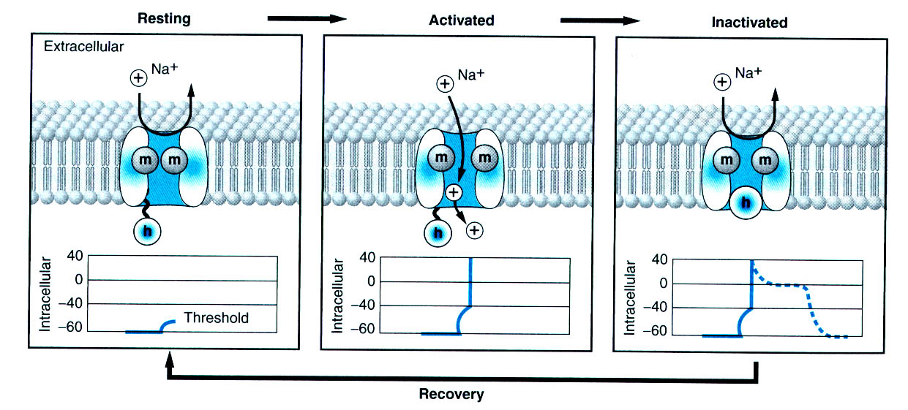
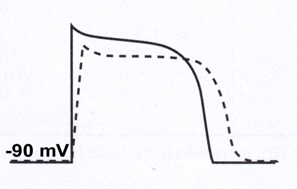
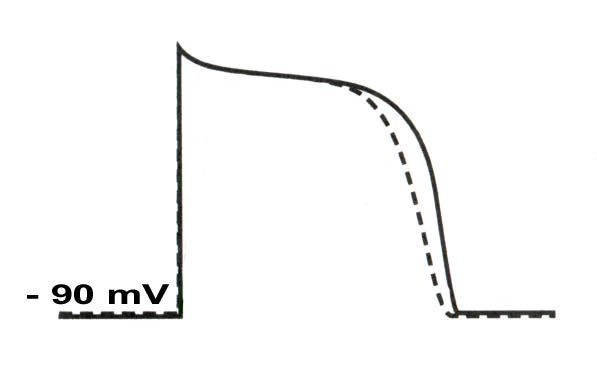
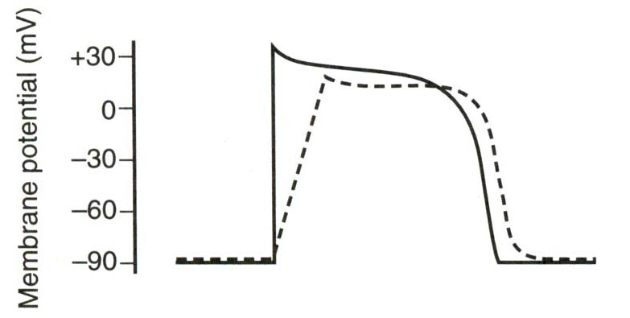
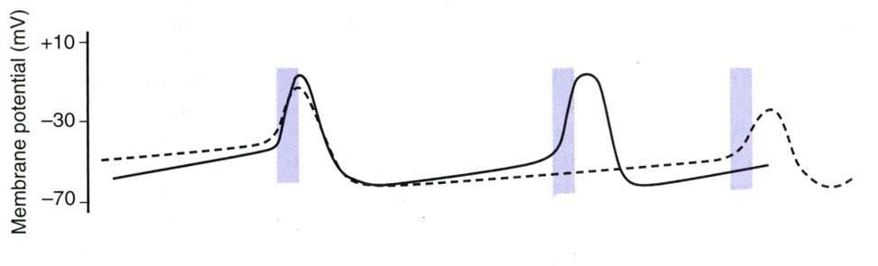
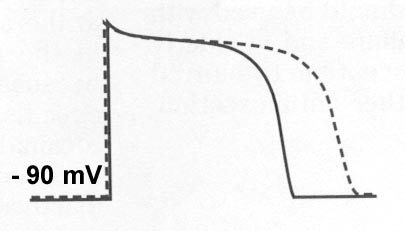
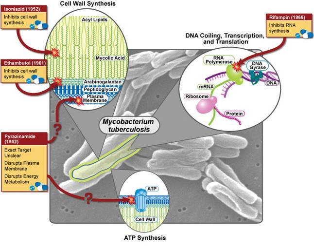
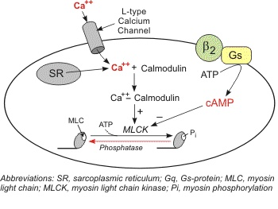
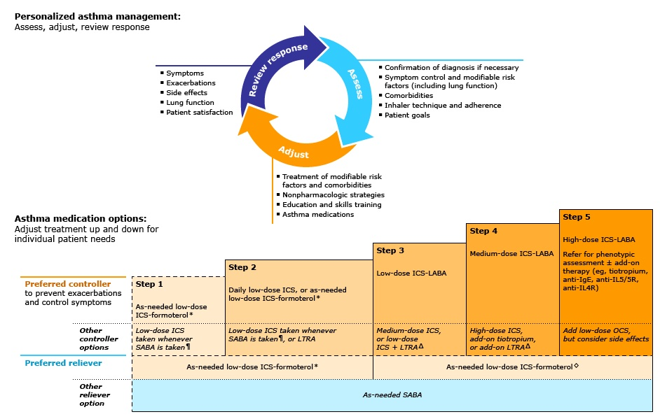

1 · Diuretics and Heart Failure Drugs
Adam Wood, Pharm.D., DABAT
Instructional Objectives
- Identify diuretics and heart failure drug classes and commonly prescribed diuretics and heart failure drugs.
- Describe the molecular mechanism of action of diuretics and heart failure drugs.
- Identify indications for commonly used diuretics and heart failure drugs.
- Describe absorption, distribution, metabolism, and excretion of diuretics and heart failure drugs.
- Summarize side effects and toxic manifestations of diuretics and heart failure drugs.
- Describe adverse effects of diuretics and heart failure drugs.
- Identify contraindications for diuretics and heart failure drugs.
- Discuss potential drug-drug, drug-food, and drug-herb interactions with diuretics and heart failure drugs.
- List commonly used protocols and patient monitoring for diuretics and heart failure drugs.
- Outline appropriate patient education for diuretics and heart failure drugs.
- The standing rule for the whole lecture. “If I say something is good for mortality purposes… that means you want the patient on it no matter what. If it’s just good for symptom management, then they may not need to be on it all the time” (at 40:55). Diuretics are symptom drugs; angiotensin-converting enzyme (ACE) inhibitors, three named beta blockers and the aldosterone antagonists are survival drugs.
- Potassium, drug by drug. “You got to know what these medications are doing to your potassium… you can kill somebody very easily with potassium” (at 6:11). Every class below states whether it lowers or raises potassium.
- The digoxin target level is probably not examined. “I’m probably not going to quiz you specifically on the level on the test, but just know that this has a very tight therapeutic index” (at 48:35).
- Doses. This site leaves milligram amounts out (dosages are not tested in this course); this deck gives none.
- Where the deck is wrong, loose or out of date, the guide says so in a box headed “Deck versus truth” and follows the truth. Those points are not to be memorized as the slide words them.
1.1 · Objectives 1–3 — Diuretics: the frame and the nephron
Diuretics are drugs that increase urine flow and/or sodium and chloride excretion [slide 4]. A sustained imbalance between sodium and chloride intake and loss is fatal [slide 4]. Too much sodium and water means volume overload and pulmonary edema; too little means volume depletion and cardiovascular collapse [slide 4]. The goal is the middle zone between the two.
At 0:23 of the recording: “These are helping to block the reabsorption of sodium and chloride in the renal tubule, which will then cause water to flow with it. This is the general rule I’ll use, that wherever salt goes, water wants to follow.”
A diuretic blocks sodium and chloride reabsorption, and water follows the salt into the urine [slide 4].
The kidney fights back (“diuretic braking”). The kidneys receive about 22 percent of the cardiac output and 7 percent of the oxygen, although they are only 0.5 percent of body weight [slide 5]. Renal compensatory mechanisms prevent volume depletion and cardiovascular collapse, and this is called diuretic braking [slide 5]. It consists of activation of the sympathetic nervous system and the renin-angiotensin-aldosterone system, a fall in blood pressure (less pressure natriuresis), a fall in atrial natriuretic peptide with a rise in antidiuretic hormone, and renal cell hypertrophy [slide 5].
At 1:08 of the recording: “I always talk about the kidneys being kind of like divas… they need their blood flow… they have a lot of these compensatory mechanisms, they have this diuretic braking action, where you’ll see activation of the renin-angiotensin system, you’ll see things like increase in ADH release… The kidneys don’t like losing all that salt and all that extra volume, so they’re going to be fighting you. And again, that’s why you see synergy between things like ACE inhibitors and diuretics and calcium channel blockers, because they can all help to block some of these compensatory mechanisms.”
Diuretics set off compensation (more renin, aldosterone and antidiuretic hormone, abbreviated ADH), which limits how well they work; angiotensin-converting enzyme (ACE) inhibitors and calcium channel blockers are synergistic partners because they block those compensations [slide 5].
Walking down the nephron [slides 6 to 11]
The nephron is the functional unit of the kidney (slide 6 pictures the kidney: cortex, medulla, nephron, renal artery, renal vein, ureter). Slide 7 pictures the nephron, from Bowman’s capsule and the glomerulus through the proximal tubule, loop of Henle, distal tubule and collecting tubule, with glucose and amino acids leaving at the proximal tubule and aldosterone and antidiuretic hormone acting at the collecting end.
| Site | What happens there | Diuretic that works there |
|---|---|---|
| Glomerulus (filtration) [slide 7] | 16 to 20 percent of the fluid and its solutes is filtered: glucose; sodium, potassium, chloride and bicarbonate; amino acids. 150 to 180 liters are filtered per day and 1 to 2 liters are excreted; the plasma is filtered about 50 to 60 times a day | None |
| Proximal tubule [slide 8] | Reabsorption of glucose, amino acids and organic solutes; weak acids and bases are excreted into the lumen; 60 to 70 percent of the filtrate is reabsorbed | Carbonic anhydrase inhibitors [slide 39] |
| Loop of Henle [slide 9] | Concentrates the urine and reabsorbs sodium. In the descending limb water leaves the lumen. In the ascending limb 25 percent of the sodium is reabsorbed and the limb is impermeable to water | Loop diuretics [slide 9] |
| Distal tubule [slide 10] | About 5 percent of the sodium is reabsorbed (the slide adds that water movement here is controlled by aldosterone; that is loose, see the box below) | Thiazide diuretics [slide 10] |
| Collecting duct [slide 11] | 2 to 3 percent of the sodium is reabsorbed. The slide says water movement is controlled by aldosterone and by antidiuretic hormone; in truth antidiuretic hormone controls the water channels and aldosterone controls sodium and potassium handling (see the box below) | Potassium-sparing diuretics [slide 11] (the aldosterone antagonists also act at this end of the nephron [slides 34 to 36]) |
Furosemide acts in the thick ascending limb. Loop diuretics work in the thick ascending limb of the loop of Henle, where about 25 percent of the sodium is reabsorbed.
Drugs are taught in descending order of potency. For the first three sites that follows how much sodium the site handles: loop (25 percent), thiazide (5 percent), potassium-sparing and aldosterone antagonist (2 to 3 percent). The carbonic anhydrase inhibitors act at the proximal tubule, where most of the filtrate is reabsorbed, but they are the weakest diuretics, because everything downstream of the proximal tubule makes up for them [slides 8 and 39].
At 4:24 of the recording: “So we’ll see that some drugs will work in the proximal tubule, some work in the loop, some in the distal tubule and some in the collecting duct… we’re going to go in descending order of potency. We’re going to start with the most potent, the most bang for our buck in terms of urine formation.”
Learn which class works at which site, and that loops are the most potent [slides 9 to 11].
- The river is the filtrate, and the glomerulus is the intake screen: it lets the small things through (water, salts, glucose, amino acids) and keeps the big things back (proteins, red blood cells), which is why protein or blood in the urine is a bad sign [the screen is slide 7; the protein and blood point is from the recording, 2:40].
- The body is a thrifty water company that wants its water back. The river has to be mostly recycled: 150 to 180 liters enter, only 1 to 2 leave [slide 7]. “Where salt goes, water follows,” so salt left in the river holds water in the river with it (the one exception is the waterproof wall of the ascending limb, below).
- The proximal tubule is the big recycling dock (60 to 70 percent back, all the glucose and amino acids) [slide 8]. A bicarbonate conveyor belt (carbonic anhydrase) runs through it. Carbonic anhydrase inhibitors jam that belt. Bicarbonate is stranded in the river and is passed in the urine, so the blood turns slightly acidic [slides 39, 41 and 43] and the urine alkaline [from the recording, 30:44]. They are the weakest diuretics because the three stations downstream (loop, distal tubule, collecting duct) simply take the extra water back [slide 39; the word “weakest” is from the recording, 31:25].
- The loop of Henle is the powerhouse station: the ascending limb has a waterproof wall and a big sodium-potassium-chloride carrier taking back 25 percent of the sodium [slides 9 and 12]. Loop diuretics jam the biggest carrier, so they give the biggest flood of urine. The same jam spills calcium and magnesium and potassium into the river [slide 13].
- The distal tubule is a small fine-tuning station (5 percent) [slide 10]. Thiazides jam its sodium-chloride gate and give a moderate flow. Unlike the loop jam, this station pulls even more calcium back, so urinary calcium falls [slide 22].
- The collecting duct is the customs office with two officers. The aldosterone officer orders more sodium doors to be installed in the wall and more sodium-potassium pumps (the sodium-potassium ATPase) to run, trading potassium out for sodium in [slide 34]. The antidiuretic hormone officer opens the water channels [slides 11, 30 and 34]. Potassium-sparing drugs board up the sodium doors [slide 30]; aldosterone antagonists jam the officer’s mailbox (they sit on the steroid receptor, so the message never reaches the nucleus) [slide 36]. Either way the sodium-for-potassium swap stops, so potassium is spared, and the flow is only modest [slides 30 and 36].
- The kidney is a diva and runs a counter-offensive. When the river is drained, it sends out the renin-angiotensin messengers, aldosterone and antidiuretic hormone to hold water back [slide 5]. ACE inhibitors and calcium channel blockers help block these compensations, which is why they pair well with diuretics (the pairing is from the recording, 1:48).
1.2 · Objectives 1–8 — Loop diuretics
Mechanism (Objective 2). Loop diuretics inhibit the sodium-2 chloride-potassium carrier on the luminal membrane of the thick ascending limb of the loop of Henle [slide 12]. The carrier takes sodium, potassium and two chlorides in together; blocked, they stay in the lumen and leave in the urine, and water goes with them. The slide 12 picture also shows potassium leaking back into the lumen to make the lumen positive, which drives magnesium and calcium reabsorption; that is why loops waste calcium and magnesium.
Volume depletion from loop diuretics. Too much sodium and water loss leaves the patient volume depleted, with orthostatic dizziness and dry mucous membranes.
The four loop diuretics (Objective 1): furosemide (Lasix), bumetanide (Bumex), torsemide (Demadex) and ethacrynic acid (Edecrin) [slide 12]. Ethacrynic acid is the one that does not follow the “-ide” naming pattern of the other three.
At 5:14 of the recording: “Most bang for your buck, loop diuretics is going to cause the biggest increases in urine outflow. We have four in this category here we have furosemide, bumetanide, torsemide, and then, just to be difficult, ethacrynic acid.”
Loops are the most potent diuretics; four agents [slide 12].
| Topic | What the slides give for loop diuretics |
|---|---|
| Major actions [slide 13] | Inhibit sodium chloride reabsorption by 20 to 25 percent; increase urine output by up to 4 liters a day; increase potassium excretion; increase calcium and magnesium excretion |
| 3 · Indications [slide 17] | Pulmonary edema (lowers pulmonary pressure); nephrotic syndrome (protein loss, so the plasma cannot hold its fluid); cirrhosis of the liver (ascites); hypercalcemia (an add-on to saline hydration, which is the main treatment); heart failure; renal failure or insufficiency; hypertension |
| Kidney function [slide 16] | Loops are effective in patients whose creatinine clearance is below 30 milliliters per minute |
| 5–6 · Adverse effects [slide 18] | Volume depletion (reflex mechanisms); hypokalemia (cardiac arrhythmias); hyperglycemia (diabetogenic); contraction alkalosis; hyperuricemia (gout); ototoxicity (damages the cochlea, the hearing organ of the inner ear; classically described as hair-cell damage, though the effect is often reversible); hyponatremia (seizures); allergic reactions (rash, photosensitivity); azotemia (raised blood urea nitrogen) |
| 8 · Interactions [slide 19] | Nonsteroidal anti-inflammatory drugs blunt the natriuretic and blood pressure response; aminoglycosides potentiate ototoxicity; warfarin competes for plasma protein binding; lithium clearance falls and toxicity rises; digitalis: the hypokalemia and hypomagnesemia of a loop diuretic bring arrhythmias |
Gentamicin and loop diuretics. Aminoglycosides such as gentamicin have their ototoxicity potentiated by loop diuretics.
Loop diuretics can be added to saline in hypercalcemia. Loop diuretics increase calcium excretion, so they can be added alongside saline in hypercalcemia, but saline hydration is the main treatment.
Ototoxicity from loop diuretics. Ototoxicity, damage to the cochlea (classically described as hair-cell damage, though often reversible), is a listed adverse effect of loop diuretics such as furosemide.
Why the adverse effects happen (Objectives 5 and 6) [slides 14 to 16].
- Hyperglycemia has three routes: hypokalemia impairs insulin release; reflex release of catecholamines acts through alpha-2 receptors to decrease insulin release and through beta-2 receptors to increase glycogenolysis; and peripheral glucose uptake is impaired (insulin resistance) [slide 14].
- Vasodilation. Loops have systemic vasodilator actions: they stimulate prostaglandin E2, and nonsteroidal anti-inflammatory drugs block that effect; there is also a direct relaxant effect on muscle whose mechanism is not understood [slide 14].
- Reflex activity from volume depletion raises the renin-angiotensin system, aldosterone and antidiuretic hormone [slide 15].
- Uric acid: excretion falls and the plasma level rises, which can cause gout, because proximal tubule reabsorption rises, tubular excretion falls, and the shrunken plasma volume concentrates the uric acid [slide 15].
- Gout flare with loop diuretics. Loop diuretics decrease uric acid excretion and shrink plasma volume, so plasma levels rise, which concentrates uric acid and can precipitate gout.
- Mild metabolic alkalosis: volume depletion raises bicarbonate reabsorption (minor) and hydrogen ion secretion is enhanced (major) [slide 16].
- Mild hyperlipidemia: increased sympathetic activity raises triglycerides [slide 16].
- Glomerular feedback: loops block the transporter in the macula densa that sends the feedback signal regulating the glomerular filtration rate and angiotensin II [slide 16].
At 8:53 of the recording: “Notably, the loop diuretics, you’re going to see these still retain efficacy even when patients have really, really poor kidney function… even though their GFR is less than 30, the loops will still work… just because the person’s making urine does not mean their kidneys are functioning all that well.”
Loops still work at a creatinine clearance below 30 [slide 16]; the thiazide contrast is in 1.3.
At 10:46 of the recording: “Note that these are going to be very similar things to what you see with other diuretics. It’s just they’re going to be less pronounced because they’re not going to be as potent at getting rid of salt and water. Loops are the biggest players here, they’re going to be the most drastic, and so they’re going to be having the most adverse effects associated with them.”
The diuretic adverse effects are shared across classes; the more potent the diuretic, the stronger the effect. The exception is potassium, where some classes lower it and some raise it [slides 18, 26 and 33].
At 5:53 of the recording: “If I’m increasing potassium excretion, well, I could see hypokalemia as a side effect… I could see hypocalcemia or hypomagnesemia as a result of this. So again, one of the big things I told you about with ACE inhibitors, you got to know what these medications are doing to your potassium… because you can kill somebody very easily with potassium. So this is a case here where these would actually lower your potassium levels.”
Loop diuretics lower potassium (hypokalemia), with hypocalcemia and hypomagnesemia, because they increase potassium, calcium and magnesium excretion [slides 13 and 18].
Calcium excretion: loops versus thiazides. Loop diuretics increase calcium (and magnesium) excretion, whereas thiazides decrease renal calcium excretion.
Hypokalemia from loop diuretics. Loop diuretics increase potassium excretion, and the resulting hypokalemia, low serum potassium, can cause weakness and cardiac arrhythmias.
Contraindications (Objective 7). Apart from anuria (no urine output) and known allergy to the drug, the slides give no separate contraindication list for the loop diuretics; the adverse-effect list is the working guide: volume depletion, gout, uncontrolled diabetes (hyperglycemia), and hypokalemia with a digitalis drug (see 1.11) are the situations to avoid or monitor.
1.3 · Objectives 1–8 — Thiazide diuretics
The thiazides and thiazide-like drugs (Objective 1) [slide 20]: chlorothiazide (Diuril), hydrochlorothiazide (Aquazide), chlorthalidone (Hygroton), metolazone (Mykrox) and indapamide (Lozol). Mechanism (Objective 2): they inhibit the sodium-chloride transporter on the luminal membrane of the distal convoluted tubule (the major action); the slide adds some carbonic anhydrase activity and, at high dose, phosphodiesterase inhibition [slide 21]. Slide 21 pictures the distal convoluted tubule cell: sodium and chloride enter together on the lumen side, calcium enters through a channel, and the blood side has the sodium-potassium pump a sodium-calcium exchanger and a parathyroid hormone receptor.
At 12:31 of the recording: “So these are actually working to block sodium and chloride transport in that distal tubule. The minor action has this carbonic anhydrase activity… don’t worry so much about that.”
Thiazides act at the distal convoluted tubule; the carbonic anhydrase and phosphodiesterase side actions on slide 21 are not for the exam [slide 21].
| Topic | What the slides give for thiazides |
|---|---|
| Major actions [slides 22 and 23] | Increased sodium chloride excretion, inhibiting up to 5 percent of the filtered load; urine output up by 1 to 2 liters a day; increased potassium and magnesium excretion; decreased renal calcium excretion, because proximal tubule calcium reabsorption and distal tubule calcium reabsorption both rise; hyperglycemia (decreased glucose tolerance, decreased insulin secretion); the glomerular filtration rate falls acutely |
| 3 · Indications [slide 24] | Hypertension; renal failure; cirrhosis of the liver; congestive heart failure; renal calcium stones (calcium oxalate). The slide also lists “hypercalcemia” here, but thiazides raise serum calcium and do not treat hypercalcemia (see the box below) |
| 5–6 · Adverse effects [slides 26 to 28] | Volume depletion (reflexes); increased sympathetic activity (decreased insulin); increased renin-angiotensin, aldosterone and antidiuretic hormone activity; hypokalemia; metabolic alkalosis (contracted extracellular fluid); hyperuricemia and gout; hyperglycemia; hypercalcemia; hyperlipidemia (5 to 15 percent rise in low-density lipoprotein cholesterol); allergic skin rashes; photosensitivity; dizziness, headache, weakness, restlessness; sexual dysfunction; constipation |
| 7 · Limit of use [slide 28] | Thiazides are ineffective at low creatinine clearance, below 30 to 40 milliliters per minute; metolazone is effective at lower clearance rates |
| 8 · Interactions [slide 29] | Nonsteroidal anti-inflammatory drugs block prostaglandins and attenuate the natriuretic action; thiazides increase digitalis toxicity, so potassium should be kept above 4.0 milliequivalents (mEq) per liter |
Nonsteroidal anti-inflammatory drugs weaken thiazides. Nonsteroidal anti-inflammatory drugs block prostaglandins, which aid natriuresis, so this attenuates the natriuretic action of thiazides.
Thiazides in hypertension [slide 25]
Thiazides work best in elderly patients, African American patients and sodium-retentive states (the slide also lists obese patients; see the box below). The mechanism is time-dependent. In the short term they decrease blood volume and cardiac output. Chronically there are direct vasorelaxant effects, so total peripheral resistance falls; there is less sodium in the arteriolar walls and so less “waterlogging”; the wall is thinner and the diameter larger; and the vessel is less responsive to norepinephrine and shows more vasodepressor responses. Low-dose thiazides are preferred for hypertension because they cause few adverse effects.
Volume depletion from thiazides. Excess salt and water loss leaves the patient volume depleted, which triggers reflex responses and orthostatic symptoms such as dizziness on standing, a falling blood pressure and dry mouth.
At 14:46 of the recording: “Who does this work well in? If you have elderly patients, obese, African American patients, who they all tend to be more sodium retentive, so if you can get rid of that extra sodium you’re going to be able to help to decrease some of this, what we call water logging… Thiazides have a more long lasting action than you would see with something like a loop diuretic, so for chronic hypertension you’re going to see far more thiazides being used than ever you would loops. Doesn’t mean they’re first line anymore, they used to be, but they can be maybe as a useful maybe second or third line add-on… they’re also well tolerated, they’re cheap.”
Thiazides suit sodium-retentive patients and are used for chronic hypertension, while loops are not, because the thiazide effect is long lasting [slide 25].
Hypokalemia from thiazides. Thiazides increase potassium excretion, and hypokalemia, a listed adverse effect, predisposes to cardiac arrhythmias.
At 17:18 of the recording: “Big difference though is you can see this hypercalcemia, because you’re causing the body to hold on to more calcium. But I just said, well, it reduces calcium stones… what it’s going to do is… causing the patient to suck up more calcium out of the renal tubule, so there’s less calcium there available to crystallize out. So yes, it could cause the patient’s serum calcium levels to go up a little bit, but it’s a pretty minor bump.”
Thiazides lower urinary calcium and raise serum calcium a little, so they prevent calcium oxalate stones; loops do the opposite, wasting calcium [slides 22, 24 and 27]. The stone paradox is the one he said confuses students.
At 18:21 of the recording: “You can find the thiazides actually become ineffective when your GFR, your creatinine clearance, goes down too low. So once you get down below like 30 or 40… stop working, with the exception… metolazone… that one will still retain the efficacy even at very low creatinine clearances… I always think about that, metolazone could make a rock pee, and that’s how I know it still retains efficacy.”
Metolazone keeps working at a very low creatinine clearance (“could make a rock pee”); the other thiazides do not [slide 28]. He gave the case of a volume-overloaded heart failure patient already on a furosemide drip to whom the nephrologist added metolazone.
Thiazides and gout. Thiazides cause hyperuricemia, which can precipitate gout, so a history of gout argues against them.
1.4 · Objectives 1–8 — Potassium-sparing diuretics
The drugs (Objective 1): amiloride (Midamor; the combination Moduretic) and triamterene (Dyrenium; the combinations Dyazide and Maxzide). The combinations are with hydrochlorothiazide [slide 31]. Mechanism (Objective 2): they block luminal sodium channels in the collecting duct [slide 30]. The collecting-tubule picture (slides 30 and 34) shows the principal cell: sodium enters and potassium leaves through luminal channels, the sodium-potassium pump works on the blood side, and the aldosterone and antidiuretic hormone receptors sit on the blood side.
| Topic | What the slides give for potassium-sparing diuretics |
|---|---|
| Actions [slide 30] | Inhibit 2 to 3 percent of sodium chloride reabsorption; decrease the gradient for potassium secretion (so potassium is held); modest increase in urine flow; uric acid: a modest rise in excretion acutely in the collecting duct, a modest fall chronically (volume contraction and more reabsorption in the proximal tubule) |
| 3 · Indications [slide 32] | The same as the other diuretics, but with much less natriuretic and diuretic effect; most often used in combination with other diuretics or antihypertensive drugs |
| 5–6 · Adverse effects [slide 33] | Hyperkalemia; caution with ACE inhibitors and angiotensin blockers; caution with potassium supplements; diabetes (glucose intolerance); megaloblastic anemia with triamterene; azotemia with amiloride |
Amiloride acts in the collecting duct. Potassium-sparing diuretics act in the collecting duct, where about 2 to 3 percent of the sodium is reabsorbed under aldosterone control.
Triamterene and potassium supplements. Avoid a supplement unless told otherwise, because triamterene already holds on to potassium, so a supplement can push potassium dangerously high and needs caution.
At 21:55 of the recording: “I’m going to be holding on to more potassium, so I call it potassium sparing. That’s going to be handy to offset the hypokalemia that stuff like loops can cause, so it would not be uncommon to see a mixture of both, a loop plus something like a potassium sparing diuretic to offset that potassium action to a degree. This is where things get complicated, because you can have multiple meds that can cause an increase in potassium, multiples that cause a decrease, and you need to know ultimately where is the patient going to fall, because if you don’t, patient can have some major issues.”
Potassium-sparing diuretics raise potassium and are paired with potassium-wasting loops or thiazides; the hyperkalemia risk is added to by ACE inhibitors, angiotensin receptor blockers and potassium supplements [slides 32 and 33].
Hyperkalemia from potassium-sparing diuretics. High serum potassium is the main adverse effect of potassium-sparing diuretics such as amiloride, and it is worse with angiotensin-converting enzyme inhibitors and potassium supplements.
At 23:26 of the recording: “A little tip here, if you ever see someone on a salt substitute, so maybe they need to be on a low sodium diet, so they get a salt substitute for their food, that’s usually potassium chloride. The tongue can’t tell the difference between sodium and potassium, so it tastes salty but it cuts down the actual sodium intake they have. That can also contribute, though, to their potassium intake. They’ve got to be cautious there.”
Patient education: salt substitutes are potassium chloride, so they add to the hyperkalemia risk with a potassium-sparing diuretic, an ACE inhibitor or an angiotensin receptor blocker [slide 33; the salt-substitute point itself comes from the recording, not the slide]. In truth, potassium chloride tastes salty enough, with a slightly bitter edge, to stand in for salt, so a salt substitute cuts the sodium a patient eats (the recording says the tongue cannot tell the difference).
1.5 · Objectives 1–7 — Aldosterone and aldosterone antagonists
What aldosterone normally does (slide 34). Aldosterone binds to its receptor, which is translocated to the nucleus; in the nucleus it activates protein synthesis; this raises the number of sodium channels in the membrane and raises the activity of the sodium-potassium ATPase, and it stimulates energy production in the distal convoluted tubule. Aldosterone is the major mineralocorticoid (“mineral” means salt). More sodium channels mean sodium and water are reabsorbed while potassium is lost, which is why chronic excess aldosterone (hyperaldosteronism) produces hypokalemia. Two ways to interrupt this: block the sodium channels (1.4) or block aldosterone itself (here).
Aldosterone inside a collecting-duct cell. After binding its receptor and reaching the nucleus, aldosterone drives protein synthesis that adds sodium channels, increasing the number of sodium channels.
The drugs (Objective 1): spironolactone (Aldactone) and eplerenone (Inspra) [slide 35].
| Topic | What the slides give for aldosterone antagonists |
|---|---|
| 2 · Mechanism [slide 36] | Bind the steroid receptor but do not translocate to the nucleus; most effective when aldosterone is high; block 2 to 3 percent of sodium chloride reabsorption, so potassium loss falls; modest effect on lipid, glucose and uric acid levels |
| 3 · Clinical uses [slide 37] | Primary aldosteronism; hypertension; congestive heart failure (the slide says class IV, symptoms at rest); edematous conditions; cirrhosis (secondary hyperaldosteronism); nephrotic syndrome |
| 5–6 · Adverse effects [slide 38] | Hyperkalemia and mild acidosis; nausea, vomiting and gastrointestinal upset; weak androgenic effects, a “partial agonist at testosterone receptors” (the slide’s words; in truth spironolactone blocks the androgen receptor, see the box below); gynecomastia and testicular atrophy in men; menstrual irregularities and, as the slide words it, hirsutism in women (hirsutism is not a true adverse effect; spironolactone treats it); eplerenone has less effect on androgen receptors |
Cirrhosis and aldosterone antagonists. Cirrhosis of the liver causes secondary hyperaldosteronism, which raises aldosterone, and aldosterone antagonists are used for the resulting edema.
Spironolactone with lisinopril. Lisinopril is an angiotensin-converting enzyme inhibitor; both drugs raise serum potassium, so together the risk of hyperkalemia is high and potassium must be monitored.
At 25:39 of the recording: “Spironolactone in particular has these weak androgenic effects, and it’s a partial agonist at testosterone receptors… it can both cause masculinizing effects in patients and feminizing effects in patients… with women you can see masculinizing issues, and men you could see breast development, feminizing sort of effect.” And at 29:31: “Spironolactone is an older drug, so it’s pretty cheap, so we start with that first. But if this is an issue, if the patient is complaining about breast development, or if the patient is complaining about menstrual problems, then you could… utilize eplerenone instead. That’s much less of the androgenic activity.”
His explanation (reported, not to be learned; see the box below): a partial agonist lifts the low androgen activity of a woman toward its own level and lowers the high activity of a man toward it, so he expected masculinizing effects in women and breast development in men. If a patient on spironolactone has breast development or menstrual problems, switch to eplerenone [slide 38]. He also named acne as a use of spironolactone (blocking testosterone’s effect on sebum), which is not on the slide and is itself evidence that the drug blocks androgens rather than mimicking them.
1.6 · Objectives 1–7 — Carbonic anhydrase inhibitors
The drugs (Objective 1): acetazolamide (Diamox), dichlorphenamide (Daramide) and methazolamide (Glauctabs) [slide 40]. Mechanism (Objective 2) [slide 39]: they inhibit carbonic anhydrase, so bicarbonate absorption in the proximal tubule falls by 80 to 90 percent, hydrogen ion production falls and the sodium-hydrogen exchange falls. The short-term effect is to increase sodium and potassium excretion by about 5 percent; after 3 to 5 days the effect is reduced to 1 to 3 percent, because the rest of the nephron makes up for it. Slide 41 pictures the proximal tubule cell with the two carbonic anhydrase sites (in the lumen and in the cell) and the carbonic anhydrase inhibitors blocking both.
| Topic | What the slides give for carbonic anhydrase inhibitors |
|---|---|
| 3 · Other uses [slide 42] | Glaucoma (decreased bicarbonate in the ciliary body; the topical forms are dorzolamide, Trusopt, and brinzolamide, Azopt); epilepsy (metabolic acidosis, central nervous system effects); mountain sickness; head injury (decreased swelling) |
| 5–6 · Adverse effects [slide 43] | Metabolic acidosis; potassium depletion; drowsiness |
Laboratory monitoring with acetazolamide. Metabolic acidosis lowers bicarbonate, and potassium depletion lowers potassium, so watch for low bicarbonate and low potassium.
At 30:44 of the recording: “By blocking this enzyme, you’re gonna trap the bicarbonate in the tubule, and then you’ll just pee it out… the urine pH may go up because there’s more bicarbonate, and the actual serum pH may go down a little bit.” And at 36:15: “You could see a bit of a metabolic acidosis, that’s different than your other diuretics, which typically cause more of a contraction alkalosis.”
Carbonic anhydrase inhibitors cause metabolic acidosis with alkaline urine, unlike the other diuretics, which cause contraction alkalosis [slides 18, 26 and 43].
At 33:05 of the recording: “In the meantime we can utilize carbonic anhydrase inhibitors to cause your blood to acidify, and then how does your body respond to acidic blood? You breathe faster, you induce tachypnea to blow off more CO2 but to bring in more O2.” And at 34:35: “By acidifying a patient’s blood you actually hyperpolarize their neurons, you make it harder for those neurons to fire off and cause a seizure.”
Mountain (altitude) sickness: the acidosis drives faster breathing until the body adapts. Epilepsy: the acidosis raises the seizure threshold. Glaucoma: less aqueous humor. He also noted that they can lessen cerebrospinal fluid production, and that the drowsiness comes from the neurons firing less readily (at 36:23) [slides 42 and 43].
1.7 · Objectives 1–2 — Heart failure: causes, types and compensation
Causes of heart failure [slide 45]. Ischemic heart disease and myocardial infarction account for 50 to 60 percent of cases. The others are hypertension, idiopathic dilated cardiomyopathy, other cardiomyopathies (alcoholic, viral, hypertrophic) and drug-induced heart failure. Dr. Wood added that chronic high blood pressure, alcohol and heavy metals such as cobalt can all cause it (37:01).
| Type | What goes wrong | Causes | What the slides call it |
|---|---|---|---|
| Systolic dysfunction [slide 46] | Decreased contractility | Loss of myocardial muscle mass; left ventricular hypertrophy; dilated cardiomyopathies | Assessed as reduced ejection fraction |
| Diastolic dysfunction [slide 47] | Impaired relaxation: decreased ventricular filling, so decreased cardiac output | Left ventricular hypertrophy (thicker, stiffer ventricles relax less efficiently); ischemia, which impairs removal of calcium from the cytosol back into the sarcoplasmic reticulum | Heart failure symptoms with preserved ejection fraction (heart failure with preserved left ventricular function) |
Dr. Wood’s way to hold the difference: in diastolic failure the ejection fraction percentage may be fine, but because the ventricle fills less the total blood pumped, the cardiac output, is still down (at 38:13).
Compensatory response [slide 48]. The body compensates with increased preload (through sodium and water retention), vasoconstriction, tachycardia and increased contractility (through sympathetic activation) and left ventricular hypertrophy. Slide 49 pictures the cascade: heart failure lowers cardiac output; that leads to increased venous volume and pressure (congestion and edema, dyspnea and orthopnea), decreased tissue perfusion (weakness and fatigue), and neuroendocrine activation (sympathetic and renin-angiotensin-aldosterone activation) with a faster heart rate, vasoconstriction and increased afterload, and sodium and water retention. Each response worsens the failure, so it is a vicious circle. The drugs in this lecture break the circle at different points.
Vasoconstriction in heart failure. Vasoconstriction is the compensatory response that increases afterload, because it raises the resistance the ventricle pumps against.
Common precipitants of decompensation [slide 50]: lack of compliance; uncontrolled hypertension; cardiac arrhythmias; inadequate therapy; inappropriate medications or fluid overload; and other causes: acute anginal chest pain, pulmonary infection and emotional stress. Dr. Wood’s example was the holiday season, when people travel, forget their medications and eat sodium-heavy food (at 39:21).
Nonpharmacologic therapy [slide 51]. Restrict dietary sodium and fluid (the slide gives 1 to 3 grams of sodium a day and fluids under 2 liters a day; learn the restriction, not the numbers). Physical activity may improve functional status. Exercise capacity is also how efficacy is judged: how much work the patient can do before getting winded (recording, 40:07).
1.8 · Objectives 1–7 — Heart failure: diuretics and angiotensin-converting enzyme inhibitors
Diuretics in heart failure [slides 52 and 53]
- Thiazide diuretics are not potent enough for most heart failure patients.
- Loop diuretics are the mainstay of heart failure therapy. They decrease sodium and water retention and so decrease preload, giving symptomatic benefit.
- Monitor the patient’s weight to detect worsening fluid overload: a gain of more than a pound a day over several days (the figure on the slide) is fluid, not tissue.
- Diuretics are for symptomatic relief only. There is no evidence that they decrease progression or mortality, and they are not mandatory therapy.
At 40:42 of the recording: “Loops are… mainstay of therapy for heart failure… it doesn’t do anything to help them live longer, it just helps with symptomatic management. This is another situation in which, if I say something is good for mortality purposes… if it’s good for mortality reasons, that means you want the patient on it no matter what. If it’s just good for symptom management, then they may not need to be on it all the time.” And at 41:46: “Diuretics are simply for symptomatic relief, they don’t do anything for disease progression or mortality, so strictly not mandatory. You may have some people who are on this more as a PRN basis, so they notice their weight’s gone up for several days in a row, they may be instructed to take the loops.”
Diuretics relieve symptoms and do not prolong survival; they are not mandatory. Daily weights guide when to take them (PRN means as needed) [slides 52 and 53]. Expect a stem that sorts heart failure drugs into “symptoms only” and “mortality benefit”.
Angiotensin-converting enzyme inhibitors in heart failure [slides 54 to 56]
ACE inhibitors decrease preload, decrease afterload, decrease sympathetic activation and decrease left ventricular hypertrophy, dilation and remodeling. They slow heart failure progression and decrease mortality [slide 54]. The benefits are hemodynamic improvements, improved exercise tolerance, decreased symptoms, fewer hospital admissions, slowed progression of disease and prolonged survival [slide 55].
ACE inhibitor problems (adverse effects) [slide 56]: impairment of renal function, hypotension, elevation of serum potassium, cough and angioedema. Dr. Wood’s advice: if the cough or angioedema is the problem, switch to an angiotensin receptor blocker (43:15).
Serum potassium: loops versus angiotensin-converting enzyme inhibitors. Loops increase potassium excretion, so they lower serum potassium, while angiotensin-converting enzyme inhibitors elevate it.
At 42:08 of the recording: “The ACEs and/or ARBs absolutely require. These work on all aspects to decrease preload and afterload, and they decrease that sympathetic activation. Biggest thing here too, they decrease left ventricular remodeling, dilation, hypertrophy… mandatory for these patients, because we know through these big huge heart studies that we see not only hemodynamic improvements, they’re better exercise tolerance, fewer admissions, less progression of disease, and they live longer… so ACEs or ARBs have to be mandatory for these patients.” And at 42:58: “You may see some risk for hypotension depending what their other meds look like, and elevation… in potassium… potentially the decreased potassium, now we got ACEs which we’re going to increase it, so we got… monitor for this.”
An ACE inhibitor or an angiotensin receptor blocker is mandatory in heart failure with reduced ejection fraction (a weak pumping heart) because it prolongs survival [slides 54 and 55; the slides do not name the type of heart failure, and in preserved ejection fraction these drugs have not shown a survival benefit]; monitor kidney function and potassium [slide 56].
1.9 · Objectives 1–7 — Heart failure: beta blockers
Beta blockers were classically considered contraindicated in heart failure [slide 57], because they lower heart rate and contractility (the recording, 44:03). The ones with a mortality benefit are only three: carvedilol (Coreg), metoprolol succinate (the extended-release form, marked XL; Toprol XL) and bisoprolol (Zebeta) [slide 57]. Dr. Wood: carvedilol is the third-generation beta blocker, metoprolol succinate is the long-acting formulation, and the other beta blockers have not been shown to reduce mortality in heart failure (43:28).
| Topic | What the slides give for beta blockers in heart failure |
|---|---|
| 9 · Keys to successful use [slide 58] | The patient should be stable before initiation; in hospital is preferred; start with very low doses; titrate up slowly over 6 to 8 weeks in total; monitor for worsening heart failure signs and symptoms |
| Benefits [slide 59] | Improved exercise tolerance; hemodynamic improvements (increase in ejection fraction); slowed disease progression; decreased hospitalizations; decreased need for transplant; decreased mortality |
| Place in therapy [slide 60] | First-line therapy in class II to IV heart failure; patients should be on an ACE inhibitor and a beta blocker irrespective of symptoms |
Beta blockers in heart failure. They can worsen heart failure, because lowering heart rate and contractility can decompensate a failing heart, so they were once avoided and classically considered contraindicated.
At 43:28 of the recording: “The next ones we need to look at are the beta blockers. These are also going to be mandatory, but note here it’s only three specific beta blockers: carvedilol, which is that third gen type of beta blocker I talked about before, metoprolol succinate, which is the XL formulation… and then bisoprolol. These three in particular have been found to be associated with reducing mortality in these heart failure patients. All the other ones have not been found to do that.” At 44:20: “They probably need to be in the hospital when you start these, and you’re going to just gradually work them up on very low doses… low and slow, that’s the tempo, as the Beastie Boys famously said… we’re gonna start low and gradually work them up. It may take like six to eight weeks to do so, but that’s okay, this is a marathon.” At 45:04: “These should be first line therapy in class two to four heart failure. We’re just going to say anyone with heart failure needs to be on these… irrespective of symptoms, ACEs and beta blockers are go-to. Remember the three: carvedilol, metoprolol succinate, and then bisoprolol.”
The three heart failure beta blockers are carvedilol, metoprolol succinate and bisoprolol; they are mandatory because they prolong survival, and they are started low and slow because a decompensating patient can die from an abrupt fall in rate and contractility [slides 57 to 60].
1.10 · Objectives 1–3 — Digoxin: action, benefit and place
The drug (Objective 1). Digoxin is a cardiac glycoside: a lactone ring and a steroid nucleus are essential for activity, and the sugar molecules (three, in the picture on slide 61) influence absorption, half-life and metabolism [slides 61 and 62]. Digoxin and digitalis-type compounds come from plants (foxglove, lily of the valley and oleander), as Dr. Wood noted (45:25).
Mechanism (Objective 2) [slides 62 to 65]. There are two ways to describe it.
| View | What digoxin does |
|---|---|
| Inotropic action (the older mechanism) [slides 62 and 63] | It inhibits the sodium-potassium ATPase of the heart muscle cell, so intracellular sodium rises; the sodium-calcium exchanger then raises intracellular calcium, and fiber shortening (the force of contraction) increases |
| Neurohormonal actions (the newer mechanism) [slides 63 to 65] | Decreases sympathetic and increases parasympathetic activity; resensitizes the baroreflex (blocking the pump helps reset it, so the heart rate falls); more parasympathetic activity in the atrioventricular node and conduction system; less sympathetic activity, so lower blood pressure and heart rate; decreases renin-angiotensin-aldosterone activity, with less remodeling and structural change; better tissue perfusion; and increased cardiac output from better pumping |
Deck versus truth, a detail that is not examined: slide 62 and Dr. Wood (46:31) say the sodium-calcium exchanger “brings calcium in”. More exactly, the rise in intracellular sodium weakens the exchanger’s normal removal of calcium from the cell, so calcium builds up and more is released from the sarcoplasmic reticulum. The result, a stronger contraction, is the same.
Target level (monitoring): 0.5 to 1 nanogram per milliliter [slide 65]; higher concentrations may be associated with worse outcomes in heart failure patients. Digoxin is one of the few heart failure drugs for which a blood level is checked (Dr. Wood, 50:44). Flag: Dr. Wood said the number itself is probably not tested (48:35); know that the level is monitored and the therapeutic index is narrow.
At 48:19 of the recording: “Digoxin is what we call very narrow therapeutic index drug. It is a very narrow window in which it works… you do not need much of this drug to get very drastic effects… I’m probably not going to quiz you specifically on the level on the test, but just know that this has a very tight therapeutic index. It is very easy to get too much and end up causing major problems for the patient.”
Digoxin has a narrow therapeutic index; the number itself is not the point [slide 65].
Benefit and place in therapy (Objective 3) [slides 66 and 67]
- Clinical benefits: improvement in symptoms, improved exercise tolerance, improved quality of life and a decreased number of hospitalizations. No survival benefit.
- Adding digoxin in heart failure. Digoxin improves symptoms, exercise tolerance and quality of life and cuts hospitalizations, but it has no survival benefit, so expect fewer symptoms but no survival gain.
- No evidence of slowed disease progression.
- Primary use: symptomatic patients who are already on optimal doses of ACE inhibitors, beta blockers and diuretics.
- It is also used for rate control in patients with atrial fibrillation and heart failure (see the box below) and is considered in patients with symptomatic heart failure and systolic dysfunction.
At 48:55 of the recording: “Clinical benefits you get with digoxin can include improvement of symptoms, better quality of life and exercise tolerance, but no survival benefits… It’s not going to be one of those mandatory ones like beta blockers or ACEs, because they don’t actually provide a survival benefit. If you’re really topped up on your ACEs and beta blockers but you’re still not really where you want to be, then maybe digoxin can be maybe a useful add-on.”
Digoxin: symptoms yes, survival no, so an add-on, not mandatory [slides 66 and 67]. He added that he prefers not to use it because it is cleared by the kidneys and accumulates in patients with kidney problems (not on the slides).
1.11 · Objectives 5–8 — Digoxin toxicity, contraindications and the antidote
| Toxicity group | What the slides list |
|---|---|
| Gastrointestinal [slide 68] | Anorexia and nausea |
| Visual disturbances [slide 68] | Blurred vision, photophobia, xanthopsia (seeing yellow), shining lights around objects and yellow-green halos |
| Central [slide 69] | Delirium, fatigue, confusion, dizziness and abnormal dreams |
| Cardiac [slide 70] | Nodal slowing with a longer PR interval (slower conduction from the atria to the ventricles), a shorter QT interval (a shorter ventricular recovery time) and a depressed ST segment; bradycardia; digoxin-induced afterdepolarization (the electrocardiogram on slide 70 shows normal sinus beats alternating with premature ventricular beats, and ST depression) |
At 50:05 of the recording: “These can be clues… you can start to see things like xanthopsia… xanth as a prefix means yellow, so they get this kind of yellow greenish sort of color discoloration, and they start to see halos around lights… that clues me in, that’s like pathognomonic for digoxin, like there’s nothing else that does that, and so that should really clue you in… we need to check a level right away.” At 51:00 of the recording: “The other big toxicity will be cardiac in nature, so bradycardia is most common, but you can see just about any arrhythmia can be caused by too much digoxin… PVCs kind of give you a clue… ventricles are a little more sensitive, and they’re more twitchy.”
Yellow-green halos and xanthopsia point to digoxin toxicity; the next step is a digoxin level [slide 68]. Bradycardia is classically listed as the most common cardiac toxicity, and premature ventricular beats are also very common, but just about any arrhythmia can occur; the ventricles become more sensitive, which is why premature ventricular beats are a clue [slide 70].
Digoxin contraindications: ventricular rhythm. Premature ventricular beats and ventricular tachycardia are contraindications, because digoxin makes the ventricles more irritable.
Contraindications and risk factors (Objective 7) [slide 71]
The slide lists: advanced atrioventricular block; severe bradycardia or sick sinus syndrome; premature ventricular contractions and ventricular tachycardia; hypomagnesemia; hypercalcemia; Wolff-Parkinson-White syndrome; and electrolyte problems (the slide writes hyperkalemia; see the box, which adds the hypokalemia the slide omits). Electrolyte disturbances make toxicity more likely (Dr. Wood, 51:34).
Digoxin contraindications: conduction and rate. Digoxin slows nodal conduction and the nodes further, so advanced atrioventricular block, severe bradycardia, sick sinus syndrome and Wolff-Parkinson-White syndrome are listed contraindications.
Digoxin immune Fab (the antidote) [slide 72]
Digoxin immune Fab (Fab means fragment antigen-binding, the part of an antibody that grips its target; the current brand is DigiFab, which the slide spells Digiband) is an antibody fragment that binds digoxin (the slide words this as binding the antigen-binding site of immunoglobulin, which is garbled: the fragment’s own antigen-binding site is what grips the digoxin), made by immunizing healthy sheep with digoxin coupled to human serum albumin. Its affinity for digoxin is higher than the affinity of digoxin for the sodium-potassium ATPase, so it pulls the drug off the pump and rapidly reverses toxicity.
Digoxin immune Fab. Its affinity for digoxin exceeds that of the sodium-potassium pump, so it binds digoxin more tightly, pulls it away and reverses toxicity rapidly.
At 52:09 of the recording: “If you had a patient who was in dire straits with digoxin and they needed to have it reversed, we do have an immune antibody… we basically hyper immunized sheep to digoxin and they produce these antibodies, and then we take that antibody and we give it to the patient, and so what this will do is bind to the digoxin and neutralize it… this will rapidly reverse the digoxin toxicity. Be careful though, because it can unmask whatever… digoxin was treating, so they may go back in afib or they may have a heart failure decompensation, but again it’s better than being dead…”
Digoxin toxicity is reversed with digoxin immune Fab, which can unmask the atrial fibrillation or heart failure the digoxin was treating [slide 72].
1.12 · Objectives 1–7 — Aldosterone antagonists in heart failure and the other inotropic agents
Aldosterone antagonists in heart failure [slide 73]
- Spironolactone: mortality reduction in grade III or IV heart failure (slide 37 says class IV and slide 73 says grade III or IV for the same functional scale; learn it as advanced heart failure, see the box in 1.5); patients are not eligible if the potassium is above 5 or the serum creatinine above 2.5; gynecomastia in about 10 percent of men (it may respond to a lower dose).
- Spironolactone eligibility in heart failure. Spironolactone holds on to potassium, so a potassium above 5 milliequivalents per liter excludes it, as does a high serum creatinine.
- Eplerenone: gynecomastia is rare (the slide says “no gynecomastia”; spironolactone causes it in about 10 percent of men).
- Mechanism in heart failure: neurohormonal inhibition, slowed remodeling of the left ventricle, slowed progression of heart failure.
- Aldosterone antagonists slow heart failure progression. Neurohormonal inhibition of aldosterone slows remodeling of the left ventricle, and so slows heart failure progression.
At 53:10 of the recording: “Remember we talked about spironolactone and eplerenone. Here we do see this does provide some mortality reduction in later stage heart failure, but they will be contraindicated if the potassium is too high or the serum creatinine is too elevated… with kidney dysfunction you’re more likely to see a hyperkalemia and just more likelihood for arrhythmias… if you do see that kind of feminizing effects… switch to eplerenone, you’ll see less of that androgen sort of activity.”
Aldosterone antagonists reduce mortality in advanced heart failure but are avoided with a high potassium or a high serum creatinine; eplerenone for the breast effects [slide 73].
Monitoring an aldosterone antagonist. Hyperkalemia is the main adverse effect, so serum potassium is the value to follow.
Milrinone and inamrinone [slides 74 to 76]
- Milrinone (Primacor) and inamrinone (Inocor, formerly amrinone) are cyclic adenosine monophosphate (cyclic AMP) phosphodiesterase (type III) inhibitors [slide 74; the structures are pictured]: by blocking the enzyme that breaks cyclic AMP down, they let it rise in the heart (the recording, 54:05).
- Milrinone and inamrinone inhibit phosphodiesterase 3. They inhibit cyclic adenosine monophosphate phosphodiesterase 3, which prevents breakdown of cyclic adenosine monophosphate, so it rises in the heart, giving direct stimulation of contraction.
- Thrombocytopenia with phosphodiesterase III inhibitors. Thrombocytopenia is listed for these inotropes, with milrinone causing less than inamrinone, so inamrinone is more likely to cause it.
- They are inotropic and vasodilator: direct stimulation of myocardial contraction, balanced arterial and venous dilation, decreased afterload and increased cardiac output [slide 75].
- Approved for short-term intravenous use in acute decompensated heart failure; long-term use is associated with higher mortality and morbidity than placebo [slide 76].
- Milrinone is an inotrope. Milrinone is a cyclic adenosine monophosphate phosphodiesterase (III) inhibitor, approved for short-term intravenous use in acute decompensated heart failure.
- Adverse effects: thrombocytopenia (less with milrinone) and ventricular arrhythmias [slide 76].
Dobutamine and dopamine [slide 77]
- Dobutamine is a selective beta-1 agonist; intravenous infusion stimulates the force of contraction more than the rate; used short term to stabilize patients.
- Dopamine: intravenous infusion; acts through dopamine and beta receptors (the slide adds that it maintains renal function; see the box).
At 55:32 of the recording: “Your main question will be, what’s the patient hypo or hypertensive? If they’re hypertensive, then milrinone works better. If they’re going to be hypotensive, then something like… dobutamine or dopamine tends to make more sense from that standpoint.” And at 54:42: “You really just want to use it for short term, because if you leave them on it for too long you can see risk for arrhythmia start to go up.”
Pick milrinone (vasodilator) for a decompensated patient with high blood pressure and dobutamine or dopamine for low blood pressure; all are short-term, started in hospital [slides 75 to 77]. Why: milrinone’s balanced vasodilation lowers blood pressure (hypotension is a known adverse effect, not on the slide), so it suits the high-pressure patient, while dobutamine and dopamine raise the force of contraction with much less vasodilation than milrinone (the recording, 55:22; dobutamine can still lower systemic vascular resistance modestly, and dopamine at higher doses constricts vessels).
1.13 · Objectives 1–7 — Newer agents: ivabradine, sacubitril-valsartan, sodium-glucose cotransporter 2 inhibitors
Ivabradine (Procoralan) [slides 79 and 80]
- Mechanism: a hyperpolarization-activated cyclic nucleotide-gated channel blocker that inhibits the pacemaker current in the sinoatrial node. It reduces heart rate and does not affect contractility (unlike a beta blocker).
- Use: heart failure patients who are maxed out on beta blockers, in normal sinus rhythm with a heart rate above 70 beats per minute. It has been shown to decrease hospitalization and heart-failure-related death.
- Adverse reactions: increased risk of atrial fibrillation; symptomatic bradycardia; visual impairment (phosphenes): it affects the retinal photoreceptors, with transient brightness in a limited area of the visual field, halos and multiple images (retinal persistency); it can resolve on its own.
- Ivabradine adverse effects. Ivabradine increases the risk of atrial fibrillation, causing new palpitations, and also of symptomatic bradycardia and visual phosphenes.
- Ivabradine visual phosphenes. Visual phosphenes can resolve on their own, so the patient can be reassured and told to report persistent symptoms.
- Contraindications: similar to beta blockers: hypotension, heart block, a pacemaker, and so on.
Sacubitril (formulated with valsartan, Entresto) [slide 81]
- Mechanism: a neprilysin inhibitor. Neprilysin normally degrades vasoactive peptides (natriuretic peptide, bradykinin and others); inhibiting it causes vasodilation, natriuresis and diuresis and inhibits growth and fibrosis of myocardial tissue. The partner valsartan is an angiotensin receptor blocker.
- Use: to reduce the risk of cardiovascular death and hospitalization in heart failure.
- Never with an ACE inhibitor: allow a 36-hour washout period to avoid adverse effects.
- Most common adverse effects: hypotension, hyperkalemia, cough and renal insufficiency.
- Sacubitril-valsartan adverse effects. Hypotension, hyperkalemia, cough and renal insufficiency are the most common adverse effects, so watch for low blood pressure and high potassium.
Sodium-glucose cotransporter 2 (SGLT2) inhibitors [slide 82]
- Dapagliflozin (Farxiga) and empagliflozin (Jardiance), used for stable, chronic heart failure with reduced ejection fraction; they reduce mortality and hospitalizations.
- Originally for diabetes: they make the kidneys not reabsorb glucose (they block the sodium-glucose transporter in the proximal tubule).
- Risks: hypotension and fungal urinary tract infections. Dr. Wood: hypotension because they cause the patient to lose fluid, and fungal infections because there is more sugar in the genitourinary tract.
At 56:22 of the recording: “This just reduces the heart rate, it doesn’t affect the contractility. So who do you use this in? This is for patients who are maxed out on beta blockers but they still have a normal sinus rhythm and heart rate above 70.” At 58:01: “Keep in mind you would not want to use this with an ACE inhibitor… to avoid having that overlap, that overlap would include things like hypotension, hyperkalemia, cough, etc.” At 59:19: “So now this is another one of those necessary add-on medications to patients… these SGLT2 inhibitors… especially reduced ejection fraction, you see reduction mortality and hospitalizations.”
Ivabradine: beta blocker maxed out, sinus rhythm, rate above 70. Sacubitril-valsartan: never with an ACE inhibitor, with a washout. SGLT2 inhibitors: a necessary add-on, with hypotension and fungal infections. [slides 79 to 82]
- Ivabradine. Slide 79 says it decreases hospitalization and heart-failure-related death. The benefit that carries its approval is fewer hospitalizations for worsening heart failure; it has not been shown to lower overall mortality, so do not sort it with the mandatory survival drugs. The “heart rate above 70” is for patients taking the maximally tolerated beta blocker dose, and it works only in sinus rhythm, which is why atrial fibrillation matters. Its halos are not digoxin’s (see 1.11).
- Sacubitril-valsartan. Slide 81 gives the washout as “to avoid adverse effects”; Dr. Wood named hypotension, hyperkalemia and cough. Not on the slides: the main reason is angioedema, because both ACE inhibitors and neprilysin inhibition let bradykinin build up, so a history of angioedema is a contraindication. Sacubitril-valsartan also carries an FDA boxed warning for fetal toxicity (stop it when pregnancy is detected).
- SGLT2 inhibitors. Slide 82 says fungal urinary tract infections; the typical infection is a genital yeast infection. Also not on the slides: they carry a risk of diabetic ketoacidosis that can occur with normal blood glucose, and they help heart failure with preserved ejection fraction too.
1.14 · Objectives 4 and 8–10 — Absorption, interactions, monitoring and patient education
Absorption, distribution, metabolism and excretion (Objective 4)
The slides give very little for this objective. Digoxin: the sugar molecules attached to the steroid nucleus influence absorption, half-life and metabolism [slide 61]. Nephron handling: the proximal tubule excretes weak acids and bases into the lumen [slide 8], and loop diuretics keep working when the creatinine clearance is below 30 milliliters per minute while the slide says thiazides lose effect (metolazone excepted; newer data show chlorthalidone still works, see 1.3) [slides 16 and 28]. Carbonic anhydrase inhibitors: their diuretic effect fades after 3 to 5 days [slide 39]. Digoxin immune Fab has a higher affinity for digoxin than digoxin has for its pump [slide 72]. Dr. Wood added in passing that digoxin is cleared by the kidneys (not on a slide).
Interactions (Objective 8)
| Combination | What happens |
|---|---|
| Loop or thiazide diuretic with a nonsteroidal anti-inflammatory drug | Prostaglandin block blunts the natriuretic and blood pressure response [slides 14, 19 and 29] |
| Loop diuretic with an aminoglycoside | Ototoxicity is potentiated [slide 19] |
| Loop diuretic with warfarin | They compete for plasma protein binding [slide 19] |
| Loop diuretic with lithium | Lithium clearance falls and toxicity rises [slide 19] |
| Loop or thiazide diuretic with digoxin (digitalis) | Hypokalemia and hypomagnesemia bring arrhythmias and increase digitalis toxicity; keep potassium above 4.0 mEq per liter [slides 19 and 29] |
| Potassium-sparing diuretic with an ACE inhibitor, an angiotensin receptor blocker or a potassium supplement | Hyperkalemia [slide 33]; the same added risk applies to aldosterone antagonists with a high potassium or creatinine [slide 73] |
| Diuretics with ACE inhibitors or calcium channel blockers | Synergy, because these block the kidney’s compensatory renin-angiotensin response (the recording, 1:48) |
| Sacubitril-valsartan with an ACE inhibitor | Do not combine; allow a 36-hour washout to avoid overlapping adverse effects, which Dr. Wood named as hypotension, hyperkalemia and cough [slide 81; the recording, 58:01]; the main reason, angioedema, is not on the slide (see 1.13) |
| Loop plus potassium-sparing diuretic | Used on purpose to offset potassium loss [recording, 21:54] |
Diuretic classes that deplete potassium. Loops, thiazides and carbonic anhydrase inhibitors; these three classes increase potassium excretion or deplete it.
The slides name no drug-herb interactions and no drug-food interaction, and none for digoxin. Not on the slides: amiodarone, verapamil, quinidine and macrolide antibiotics such as clarithromycin raise digoxin levels, and St. John’s wort lowers them. The recording adds the salt-substitute point: salt substitutes are potassium chloride and add to hyperkalemia risk with potassium-sparing diuretics, ACE inhibitors and angiotensin receptor blockers.
Protocols and monitoring (Objective 9)
| Topic | What the slides give |
|---|---|
| Daily weight | Worsening fluid overload shows up as weight gain over several days; heart failure patients on a loop diuretic are watched this way [slide 52] |
| Potassium and kidney function | ACE inhibitors raise potassium and can impair kidney function [slide 56]; potassium above 4.0 mEq per liter with a thiazide and digitalis [slide 29]; spironolactone is not for a potassium above 5 or a serum creatinine above 2.5 [slide 73] |
| Beta blockers in heart failure | Start low in a stable patient, titrate up slowly, monitor for worsening heart failure signs and symptoms [slide 58] |
| Digoxin level | Target 0.5 to 1 nanogram per milliliter; higher levels may do worse [slide 65]; Dr. Wood said he is probably not going to quiz the number, so know that a level is checked, especially when toxicity is suspected |
| Short-term intravenous agents | Milrinone, inamrinone, dobutamine and dopamine are started in hospital for acute decompensation and stopped as the patient stabilizes [slides 76 and 77] |
| Sodium and fluid restriction | [slide 51] |
| Washout | 36 hours between an ACE inhibitor and sacubitril-valsartan [slide 81] |
Patient education (Objective 10)
- All heart failure patients: restrict sodium and fluid; weigh yourself every day and report a gain over several days, which is fluid [slides 51 and 52].
- Loop and thiazide diuretics: expect volume depletion and dizziness; photosensitivity and rash; report hearing problems with a loop diuretic; gout and high blood sugar are possible; potassium and magnesium need monitoring [slides 18, 26 and 27].
- Potassium-sparing diuretics, aldosterone antagonists, ACE inhibitors, angiotensin receptor blockers and sacubitril-valsartan: be cautious with potassium supplements and salt substitutes (potassium chloride) [slides 33, 56 and 81; the salt-substitute point is from the recording].
- Spironolactone: breast enlargement in men and menstrual irregularity in women are the reason to ask for eplerenone [slide 38].
- Carbonic anhydrase inhibitors: drowsiness [slide 43].
- Beta blockers in heart failure: they are started low and increased slowly, and the patient should report worsening heart failure symptoms [slide 58].
- Digoxin: report nausea, loss of appetite, yellow-green halos or blurred vision, confusion and a slow pulse, which are signs of toxicity [slides 68 to 70].
- Ivabradine: a transient brightness in part of the visual field, halos or multiple images can happen and may resolve on their own [slide 80].
- SGLT2 inhibitors: dizziness from low blood pressure and fungal infections of the genitourinary tract [slide 82].
| Relieves symptoms only | Prolongs survival (mandatory or necessary add-on) |
|---|---|
| Loop diuretics (and thiazides, where strong enough) [slides 52 and 53]; digoxin [slide 66] | ACE inhibitors or angiotensin receptor blockers [slide 54]; carvedilol, metoprolol succinate and bisoprolol [slide 57]; spironolactone and eplerenone in advanced failure [slide 73]; sacubitril-valsartan [slide 81]; SGLT2 inhibitors [slide 82] |
- Milligram doses. Doses are not tested in this course. The deck gives none.
- The digoxin target level. It is stated in 1.10 because the slide gives it, but Dr. Wood said he is probably not going to quiz it.
- Percentages and numbers. The sodium percentages by nephron site, the 20 to 25 percent and 4 liters of loops, the 1 to 2 liters of thiazides, the 80 to 90 percent bicarbonate figure, 50 to 60 percent of heart failure caused by ischemia, the 45 percent ejection fraction, the sodium and fluid limits, the weight-gain figure, 6 to 8 weeks of beta blocker titration and the 36-hour washout are stated for recognition. Learn the direction and the idea, not the figure.
- Where the deck is wrong or loose, a “Deck versus truth” box says so: slides 9 and 10 (nephron), 21 and 42 (side actions), 23 (uric acid), 25 (obesity), 28 (clearance), 30 (antiporters), 36 (calcium, lag), 37 against 73 (class IV or III and IV), 38 (partial agonist), 46 (45 percent), 51, 52 and 58 (numbers), 62 (calcium exchanger), 67 (first line), 68 against 80 (the two kinds of halos), 71 (hyperkalemia), 72 (antibody wording), 77 (dopamine and the kidney), 79 (ivabradine mortality), 81 (washout reason) and 82 (fungal infection site). The boxed warnings that the slides omit (loop diuretics, amiloride, triamterene, sacubitril-valsartan, dopamine, ACE inhibitors, metoprolol) are flagged in the boxes above and are not on the slides.
- Slides not represented: 1 (title), 2 (the deck’s own objectives), 3, 44 and 78 (section dividers) and 83 (“Questions?”).
2 · Antiarrhythmic Drugs
Adam Wood, Pharm.D., DABAT
Instructional Objectives
- Identify antiarrhythmic drug classes and commonly prescribed antiarrhythmic drugs.
- Describe the molecular mechanism of action of antiarrhythmic drugs.
- Identify indications for commonly used antiarrhythmic drugs.
- Describe absorption, distribution, metabolism, and excretion of antiarrhythmic drugs.
- Summarize side effects and toxic manifestations of antiarrhythmic drugs.
- Describe adverse effects of antiarrhythmic drugs.
- Identify contraindications for antiarrhythmic drugs.
- Discuss potential drug-drug, drug-food, and drug-herb interactions with antiarrhythmic drugs.
- List commonly used protocols and patient monitoring for antiarrhythmic drugs.
- Outline appropriate patient education for antiarrhythmic drugs.
- Know which drugs sit in which class. “You do need to be able to recognize which drugs fit into each of those three categories” (1A, 1B, 1C; at 5:07). His mnemonic for class IA is PDQ: procainamide, disopyramide, quinidine (at 11:08).
- Not the channel affinity. “I’m not really going to harp so much on whether it binds to the open over the inactivated. I don’t care about that so much” (at 5:07), and again for dissociation (at 10:53). Those slide lines are printed below for completeness and are not asked.
- The indication table is for the trend, not for memorizing. Class II and class IV are for arrhythmias above the ventricles; class I and class III can treat both atrial and ventricular arrhythmias (at 5:55; see 2.1).
- Rate control against rhythm control. “Kind of the difference between which drugs are going to be more of a rate control versus rhythm control” (at 30:08). The slides do not use those two words; 2.1 shows where the slides say the same thing in their own words.
- Doses. Not tested in this course and left out here (the deck gives one, for magnesium sulfate).
- Where a slide differs from current guidelines, the slide is what you are tested on and a one-line note says how practice differs.
2.1 · Objectives 1–3 — Principles, the four classes and the indication trend
Principles of therapy [slide 3].
- Identify and remove precipitating factors first: hypoxia, ischemia, electrolytes.
- Establish the goal: termination of an ongoing arrhythmia, or prevention of arrhythmia (judged by symptoms, frequency and reproducibility, and structural damage).
- Minimize risk: all antiarrhythmics may induce arrhythmias, so understand the mechanism.
- The heart’s electrophysiology is a “moving target”: ischemia may alter the resting membrane potential, conduction velocity, intracellular calcium and the rate of repolarization.
At 2:01 of the recording: “Any antiarrhythmic drug may itself induce arrhythmias… antiarrhythmics themselves, depending on which ones we’re using, can be potentially quite dangerous if you don’t know what you’re doing with them.”
Every antiarrhythmic can cause an arrhythmia [slide 3]; it is the reason class I drugs fell out of favor (2.3 to 2.5).
The four ways to classify them [slide 4].
| Mechanism | What it does [slide 4] |
|---|---|
| Sodium channel blockers | Decrease excitability |
| Action potential prolongation | By blocking potassium channels |
| Beta receptor blockade | Prolong atrioventricular refractoriness, prolong conduction, increase the energy required for fibrillation |
| Calcium channel blockers | Decrease the excitability of slow-response cells |
The classification (Objective 1) [slide 5].
| Class | What it is [slide 5] | Drugs in this deck |
|---|---|---|
| Class 1 | Sodium channel blockers: 1A (open > inactivated), 1B (inactivated > open), 1C (open > inactivated) | 1A: quinidine, procainamide, disopyramide [slides 9 to 15] 1B: lidocaine [slides 17 to 19] 1C: flecainide, propafenone [slides 21 to 24] |
| Class 2 | Beta receptor antagonists | Propranolol; metoprolol, acebutolol; esmolol [slides 26 to 29] |
| Class 3 | Prolong repolarization (potassium) | Amiodarone, dofetilide, sotalol [slides 31 to 36] |
| Class 4 | Calcium channel blockers | Verapamil, diltiazem [slides 38 and 39] |
| Others | Adenosine, digitalis | Adenosine, digoxin, magnesium sulfate [slides 40 to 45] |
The others group. The classification lists adenosine and digitalis (digoxin) as the others, outside classes I to IV.
At 5:07 of the recording: “I’m not really going to harp so much on whether it binds to the open over the inactivated. I don’t care about that so much. But you do need to be able to recognize which drugs fit into each of those three categories.”
Learn which drug is 1A, which is 1B and which is 1C [slide 5]; the open-or-inactivated preference in brackets is not tested.
Indications by class (Objective 3) [slide 6].
| Class | Indications [slide 6] |
|---|---|
| 1A | Supraventricular tachycardia, ventricular tachycardia, ventricular fibrillation prevention, and prevention of premature ventricular contractions |
| 1B | Ventricular tachycardia, ventricular fibrillation prevention, symptomatic ventricular beats |
| 1C | Life-threatening ventricular tachycardia or fibrillation, refractory supraventricular tachycardia |
| II | Supraventricular tachycardia, fibrillation |
| III | Refractory ventricular tachycardia, atrial fibrillation, flutter, supraventricular tachycardia |
| IV | Supraventricular tachycardia |
| Miscellaneous | Supraventricular tachycardia |
At 5:55 of the recording: “This list is not meant to fully memorize… what I want you to take are sort of the trends. If you look at class two and class four, notice here these are good for treating supraventricular arrhythmias, or things that originate above the ventricles… They don’t really do anything for ventricular arrhythmias… Class one as a whole and class three, based off how they work, they can treat both atrial arrhythmias and ventricular arrhythmias.”
Read slide 6 as a pattern: classes I and III treat both supraventricular and ventricular arrhythmias; classes II and IV (and the miscellaneous agents) are listed for supraventricular ones. Two slide details sit beside the trend: propranolol’s own slide also lists ventricular ectopic beats (he called that use “out in the weeds”, at 30:54), and verapamil and diltiazem are to be avoided in ventricular arrhythmias [slides 27 and 39].
Rate control and rhythm control. Dr. Wood sorts the drugs by goal: a rhythm control drug puts the patient back in, and keeps them in, normal sinus rhythm; a rate control drug leaves the atria in their arrhythmia and limits how many beats reach the ventricles. The slides say the same thing in their own words:
- Rhythm: quinidine “maintain rhythm with atrial flutter or fibrillation” [slide 10]; dofetilide “normal rhythm in atrial fibrillation” [slide 34].
- Rate: beta blockers prolong atrioventricular conduction [slide 25]; verapamil and diltiazem decrease atrioventricular conduction [slide 38]; digoxin “slow ventricular rate” [slide 44].
- Amiodarone’s slide says “maintain normal rate in atrial fibrillation” [slide 31], although he called amiodarone the rhythm control drug you will see most often (at 36:09). No question here turns on that wording.
At 12:28 of the recording: “The class ones that we’re looking at so far are going to be what we consider rhythm control. That means that they will maintain normal sinus rhythm in a patient as opposed to just preventing the symptoms.”
Class I = rhythm control; the class II beta blockers are his example of rate control (at 28:36). The words are his, not the slides’.
- The rooms. The sinoatrial node is the DJ who sets the beat. The atria are the front room, the atrioventricular node is the door to the main room, and the ventricles are the main room, where the real work (pumping) is done.
- Rate control works the door. Class II beta blockers are the bouncer (Dr. Wood’s own image, at 29:19): he ignores the adrenaline passes (beta receptors), so the pacemaker cells take longer to reach threshold (a flatter phase 4) and fewer beats get through to the main room [slides 25 and 26]. Class IV verapamil and diltiazem are a second bouncer at the same door, working through calcium instead (L-type calcium channels; slower atrioventricular node conduction) [slides 37 and 38]. Digoxin turns up the calming music at the door: more parasympathetic tone, slower atrioventricular conduction, a slower ventricular rate [slides 43 and 44].
- Door staff cannot stop a fight that starts inside the main room. That is the slide 6 trend: classes II and IV are listed for supraventricular arrhythmias, and verapamil and diltiazem are to be avoided in ventricular arrhythmias [slides 6 and 39].
- Rhythm control works on the dancers themselves, in both rooms. Class I slows every dancer’s first step (phase 0, the sodium upstroke): IA (“PDQ”) slows the first step and makes the whole song longer [slide 8]; IC slows the first step the most and works on healthy dancers too (“affect normal heart”) [slide 20]; IB lidocaine only goes after dancers in the damaged (ischemic) corner, and makes their songs shorter [slides 16 and 18]. Class III makes every dancer rest longer before the next song (prolonged repolarization and refractory period) [slide 30].
- Rest too long and the dance floor twists: torsades de pointes, from class IA, dofetilide and sotalol [slides 11, 13, 15, 34 and 36]. Magnesium sulfate is the one move that untwists it [slide 45].
- Adenosine flips the club’s power off for 2 to 3 seconds and back on (Dr. Wood’s “turn it off and turn it back on”, at 46:41), which can reset a runaway beat from above the ventricles [slides 41 and 42].
2.2 · Objective 2 — The sodium channel and the action potential
Slide 7 shows the three states of the cardiac sodium channel. At rest the channel is closed and sodium cannot enter. When an action potential arrives the channel is activated: it opens, sodium rushes in and the membrane potential shoots up (phase 0). It then becomes inactivated: a gate plugs the inner mouth of the channel and no sodium enters while the cell repolarizes, until the channel recovers to the resting state [slide 7]. The time the channels spend inactivated is the refractory period, when another beat cannot start.

The action potential pictures in this deck all follow one convention: the solid line is the normal action potential and the dashed line is the action potential with the drug. Each class changes a different part of the curve; the table is the summary, and each class section below shows its own picture.
| Class | Cells it acts on | What the dashed line shows |
|---|---|---|
| IA [slide 8] | Fast-response (working) cells | Slower, lower phase 0 upstroke; the action potential lasts longer |
| IB [slide 16] | Fast-response cells, ischemic tissue most | Same upstroke; repolarization (phase 3) ends sooner, so the action potential is shorter |
| IC [slide 20] | Fast-response cells, including normal tissue | Markedly slower phase 0 upstroke |
| II [slide 25] | Slow-response (pacemaker) cells | Flatter phase 4, so threshold is reached later and the next beat is delayed |
| III [slide 30] | Fast-response cells | Same upstroke; phase 3 repolarization is delayed, so the action potential is longer |
| IV [slide 37] | Slow-response (pacemaker) cells | The same picture as class II: a flatter phase 4 |
Calcium channel blockers “decrease slow-response cells excitability” [slide 4]; the slow-response cells are the pacemaker cells of the sinoatrial and atrioventricular nodes (the recording, at 7:22), which is why classes II and IV act on the nodes.
2.3 · Objectives 1–8 — Class IA: quinidine, procainamide, disopyramide
Class IA actions (Objective 2) [slide 8]. Slow phase 0, slow conduction and prolong the action potential. (Channel affinity: open > inactivated; dissociation: slow. Not tested.)

At 11:08 of the recording: “I like to use the acronym PDQ for my class 1A antiarrhythmics… those are going to be the three drugs that fit into this category here.”
PDQ = procainamide, disopyramide, quinidine, the three class IA drugs [slides 9 to 15].
Quinidine [slides 9 to 11]
Quinidine is the D-isomer of quinine (brand names Quinalan, Cardioquin, Quinidex) [slide 9].
| Topic | What the slides give for quinidine |
|---|---|
| 2 · Direct actions [slide 9] | Slows conduction; prolongs the refractory period; slows the rate of rise of phase 0; increases the threshold for excitability; decreases automaticity |
| 2 · Indirect actions [slide 9] | Anticholinergic; alpha blocker at higher doses |
| 3 · Indications [slide 10] | Maintain rhythm with atrial flutter or fibrillation; control ventricular tachycardia; conversion of atrial flutter and fibrillation (very limited use), with anticoagulants and digitalis listed under it |
| 8 · Interactions [slide 10] | Cytochrome P450 2D6 (CYP2D6) inhibitor (codeine, morphine) |
| 5–6 · Toxicity [slide 11] | Nausea, vomiting, diarrhea (30 to 50 percent); arrhythmias (ventricular and atrial); hypotension; thrombocytopenia (may be fatal); cinchonism: tinnitus, dizziness, blurred vision; quinidine sudden death; torsades de pointes (2 to 8 percent); immunological reactions |
Quinidine's most frequent toxicity. Gastrointestinal upset (nausea, vomiting, diarrhea) is listed in 30 to 50 percent of patients.
At 14:49 of the recording: “Quinidine and quinine actually come from the cinchona tree. And so there’s this triad of symptoms that you get that is linked to substances that come from the cinchona tree. And so it’s called cinchonism, and that includes tinnitus, dizziness, and blurred vision.”
Cinchonism (tinnitus, dizziness, blurred vision) points to quinidine [slide 11].
At 15:31 of the recording: “Because we are prolonging the whole action potential, everything from the QRS and the QTc are going to be prolonged. Is that QT prolongation what we care about? Because that can put the patient at risk for torsades, or that twisting of the points.”
Class IA prolongs the action potential, and torsades de pointes is the danger (quinidine 2 to 8 percent) [slides 8 and 11]. The QRS and QT wording is his; the slides show the longer action potential. He added that a second QT-prolonging drug (his example: a macrolide antibiotic) raises the risk further, and that the electrocardiogram is checked against a baseline (at 16:01; not on the slides).
The hypotension follows from the alpha blockade at higher doses [slides 9 and 11]. Dr. Wood also said the class I drugs have fallen out of favor because of this toxicity, and that a beta blocker is much “cleaner” (at 14:05 and 16:34).
Procainamide [slides 12 and 13]
Procainamide is an amide derivative of procaine (brand names Procan, Pronestyl) [slide 12].
| Topic | What the slides give for procainamide |
|---|---|
| 4 · Duration [slide 12] | Short duration of action (3 to 4 hours), so there is a slow-release preparation |
| 2 · Compared with quinidine [slide 12] | Less anticholinergic activity; no alpha-blocking activity |
| 4 · Metabolism [slide 12] | Active acetylated metabolite (N-acetylprocainamide, NAPA), which has class III activity; fast acetylators may increase the active metabolite |
| 5–6 · Adverse effects [slide 13] | Hypotension; slowing of conduction; nausea; lupus-like syndrome (25 to 50 percent, more often in slow acetylators); torsades de pointes; bone marrow suppression (0.2 percent) |
| Route [slide 13] | Intravenous: better tolerated than quinidine. Oral: poorly tolerated long term |
Procainamide's short action. Procainamide has a short duration of action (3 to 4 hours), so a slow-release preparation is used.
At 18:53 of the recording: “Anytime you see acetylation… it’s probably going to be linked back to this lupus-like syndrome. That’s kind of a very notable sort of side effect associated with that.”
Acetylation means lupus-like syndrome, more often in slow acetylators [slide 13]. He linked it to hydralazine from the antihypertensive lecture, which is metabolized the same way (at 18:23).
Disopyramide [slides 14 and 15]
| Topic | What the slides give for disopyramide (Norpace) |
|---|---|
| 2 · Actions [slide 14] | Effects similar to quinidine; more anticholinergic actions; negative inotropic effects |
| 3 · Indications [slide 14] | Ventricular tachycardia; supraventricular arrhythmias (flutter, fibrillation) |
| 5–6 · Toxicity [slide 15] | Hypotension; antimuscarinic effects; conduction disturbances; congestive heart failure (decreased contractility); torsades de pointes |
| 7 · Contraindicated [slide 15] | Heart block, hypersensitivity, glaucoma |
The two contraindications that are not allergy follow from its actions: glaucoma from the strong anticholinergic effect, and heart block from a drug that already causes conduction disturbances [slides 14 and 15]. The negative inotropy is why it can bring on heart failure [slide 15].
| Clue in the stem | Drug |
|---|---|
| Tinnitus, dizziness and blurred vision (cinchonism); diarrhea in a third to a half; fatal thrombocytopenia; sudden death; a CYP2D6 inhibitor | Quinidine [slides 10 and 11] |
| Lupus-like syndrome in a slow acetylator; an active metabolite with class III activity; a 3 to 4 hour duration; least anticholinergic, no alpha block | Procainamide [slides 12 and 13] |
| The most anticholinergic; contraindicated in glaucoma and heart block; negative inotropy and heart failure | Disopyramide [slides 14 and 15] |
2.4 · Objectives 1–7 — Class IB: lidocaine
Class IB actions (Objective 2) [slide 16]. Shorten phase 3 (a shorter action potential) and decrease ectopic foci automaticity. The channel preference is inactivated > open, with a higher affinity in ischemic tissue and little effect in normal tissue; dissociation is rapid (under 1 second). The ischemic-tissue point is the one to keep; the affinity and dissociation wording is not tested.

| Topic | What the slides give for lidocaine (Xylocaine) |
|---|---|
| 3 · Indications [slide 17] | Ventricular tachycardia and premature beats; ventricular fibrillation; acute myocardial infarction; Wolff-Parkinson-White is also listed |
| 4 · Route [slide 18] | Given intravenously (extensive first-pass metabolism) |
| 2 · Actions [slide 18] | Binds the open or inactivated channel, recovery very rapid; most effective on sodium channels in ischemic tissue; less effect on normal tissue; not effective against atrial arrhythmias |
| 5–6 · Toxicity [slide 19] | Central nervous system toxicity: drowsiness, confusion, restlessness, muscle twitches, seizures; nystagmus is an early sign of toxicity; hypersensitivity; increases atrioventricular conduction |
| 7 · Contraindications [slide 19] | Seizures, age |
Lidocaine and the atrioventricular node. Lidocaine's toxicity list includes increased atrioventricular conduction, along with hypersensitivity and its central nervous system effects.
At 21:16 of the recording: “Because it has higher affinity in ischemic tissue… When would I see myocardial ischemic tissue? Probably during a heart attack… the action potentials in that ischemic tissue, they get longer on their own. So if we could use something like lidocaine to shorten that up, it would help to restore more normal-ish sort of function there.”
Lidocaine works where the tissue is ischemic (acute myocardial infarction) and shortens the action potential [slides 16 to 18].
The class IB drug. Lidocaine is the class IB sodium channel blocker; it works mainly on sodium channels in ischemic tissue.
At 23:02 of the recording: “This one has to be given IV because it has really extensive first pass… also not effective for atrial arrhythmias. This would be relegated to specifically ventricular arrhythmias.”
Intravenous only; ventricular arrhythmias only [slide 18].
At 23:37 of the recording: “If we’re having too much lidocaine on board it can cause things like drowsiness… confusion, restlessness, and that can then eventually lead into seizures.”
Too much lidocaine shows in the brain first: drowsiness and confusion, then seizures; nystagmus is the early sign [slide 19]. He also said lidocaine use in cardiac arrest has largely been replaced by a class III drug (amiodarone; at 22:42), and that heart failure or liver disease slows its clearance (at 24:12; not on the slides).
2.5 · Objectives 1–7 — Class IC: flecainide, propafenone
Class IC actions (Objective 2) [slide 20]. Slow phase 0, slow conduction, prolong the refractory period, and affect the normal heart (the opposite of class IB). Channel affinity: open > inactivated; dissociation: very slow (not tested).

Flecainide [slides 21 to 23]
| Topic | What the slides give for flecainide (Tambocor) |
|---|---|
| 2 · Actions [slide 21] | Blocks sodium channels and potassium channels in the ventricles, slows recovery of the sodium channel; prolongs the PR, QRS and QT intervals; prevents premature ventricular contractions |
| 4 · Kinetics [slide 21] | Long half-life (14 hours); oral or intravenous |
| 3 · Indications [slide 22] | Life-threatening sustained ventricular arrhythmias; supraventricular arrhythmias |
| 7 · Restriction [slide 22] | Use only in patients without significant structural damage to the heart |
| 5–6 · Toxicity [slide 23] | Blurred vision, tremor; ventricular tachycardia resistant to treatment; bronchospasm; seizures; thrombocytopenia; increased mortality in myocardial infarction |
Which drugs are class IC. Flecainide is class IC (propafenone is the other); it blocks sodium and potassium channels in the ventricles.
The restriction and the mortality line belong together: a drug that raises mortality after a myocardial infarction is kept for hearts without significant structural damage [slides 22 and 23]. Added background (not on the slides): this is flecainide’s Food and Drug Administration (FDA) boxed warning, from the Cardiac Arrhythmia Suppression Trial.
Propafenone [slide 24]
Propafenone has the same mechanism as flecainide plus beta-blocking activity [slide 24]. Its toxicity: proarrhythmic; dizziness, blurred vision, bradycardia; bronchospasm and beta-adrenergic blockade; agranulocytosis, anemia, thrombocytopenia; it can worsen heart failure [slide 24]. The bradycardia, bronchospasm and worse heart failure are the beta-blocker part.
Propafenone and the blood count. Propafenone's toxicity list includes agranulocytosis, anemia and thrombocytopenia.
At 26:38 of the recording: “The downside to doing that was we actually found we end up causing a bunch of arrhythmias to occur, and that has led to patients dying basically, and so that’s why we’ve kind of moved over to the relatively safer form of rate control.”
Class IC can cause the very arrhythmias it treats, and raises mortality after a myocardial infarction [slides 23 and 24]. He also said both drugs are older and now used mainly in specialty cases (at 24:49).
| IA | IB | IC | |
|---|---|---|---|
| Phase 0 | Slowed [slide 8] | Unchanged; phase 3 shortened [slide 16] | Slowed the most [slides 20 and the picture] |
| Action potential | Prolonged [slide 8] | Shortened [slide 16] | Refractory period prolonged [slide 20] |
| Where it works | Both supraventricular and ventricular [slide 6] | Ischemic tissue; ventricular only [slides 16 and 18] | Normal heart too; life-threatening or refractory cases [slides 6 and 20] |
| Drugs | Quinidine, procainamide, disopyramide | Lidocaine | Flecainide, propafenone |
Flecainide and asthma. Bronchospasm is on flecainide's toxicity list (and propafenone's), a concern in asthma.
2.6 · Objectives 1–8 — Class II: beta blockers
Class II actions (Objective 2) [slide 25]. Slow conduction, decrease automaticity, prolong atrioventricular conduction, decrease phase 4 depolarization.

Class II and phase 4. Class II drugs decrease phase 4 depolarization, so pacemaker cells reach threshold later; they also slow conduction and prolong atrioventricular conduction.
At 29:19 of the recording: “The beta blocker serving as sort of like a bouncer, right? So they only want to let so many people into the club at a steady rate, and this prevents any of the other riff-raff from getting in.”
Beta blockers are rate control at the atrioventricular node: in atrial fibrillation they limit how many beats reach the ventricles [slides 25 and 26]. He said the class IV calcium channel blockers do “almost identically the same thing” through calcium (at 29:34).
Propranolol [slides 26 to 28]
| Topic | What the slides give for propranolol (Inderal, Betachron) |
|---|---|
| 1–2 · Class and actions [slide 26] | Nonselective beta blocker; reduces phase 4 activation; slows atrioventricular conduction; negative inotropic and chronotropic effects; suppresses premature ventricular beats; membrane stabilizing |
| 3 · Indications [slide 27] | Supraventricular arrhythmias; ventricular ectopic beats; myocardial infarction |
| 5–6 · Toxicity [slide 28] | Heart failure; heart block; hypotension; hyperglycemia (see the box below); bronchospasm; digitalis toxicity |
What propranolol treats. Propranolol is listed for supraventricular arrhythmias, ventricular ectopic beats and myocardial infarction.
At 31:28 of the recording: “Remember, propranolol is a nonselective beta blocker. It’ll affect both beta 1 and beta 2 equally. So if you have someone with asthma, they may have those beta 2 receptors blocked up and they may cause bronchospasm.”
Nonselective, so bronchospasm in asthma [slides 26 and 28]; choose a beta-1 selective agent instead [slide 29].
Metoprolol, acebutolol and esmolol [slide 29]
Metoprolol and acebutolol (Lopressor, Sectral) are beta-1 selective blockers, similar to propranolol but with less bronchospasm. They can still cause congestive heart failure and central nervous system sedation and fatigue. Esmolol is the intravenous, short-acting beta blocker [slide 29].
Metoprolol and acebutolol: central effects. Central nervous system sedation and fatigue are listed for metoprolol and acebutolol, with congestive heart failure.
Esmolol. Esmolol is the intravenous, short-acting beta blocker, listed beside the beta-1 selective agents metoprolol and acebutolol.
At 32:26 of the recording: “Metoprolol and acebutolol, examples of beta 1 selective beta blockers, definitely better for patients who have like reactive airway disease or asthma. I would certainly recommend something like this over propranolol if that’s the case.”
Asthma: a beta-1 selective agent over propranolol [slide 29]. He added that esmolol is easy to titrate up or down in the emergency room or intensive care unit because it is so short-acting (at 32:51), and that any beta blocker from earlier lectures is fair game (at 32:04).
Interactions (Objective 8). Propranolol’s toxicity list includes digitalis toxicity [slide 28], and the digoxin slide says to avoid beta blockers with it [slide 44].
2.7 · Objectives 1–8 — Class III: amiodarone, dofetilide, sotalol
Class III actions (Objective 2) [slide 30]. Potassium channel blockers that prolong repolarization: they reduce potassium efflux, prolong phase 3 repolarization, prolong the refractory period and prolong the duration of the action potential.

How class III prolongs repolarization. Class III drugs reduce potassium efflux, which prolongs phase 3 repolarization and the refractory period.
At 33:41 of the recording: “If we block that potassium efflux, it’s going to be prolonging the repolarization. The refractory period does get longer.”
Class III = block potassium efflux, prolong repolarization and the refractory period [slide 30]. He added that on the electrocardiogram the QT interval is the one most affected (at 33:51; not on the slides).
Amiodarone [slides 31 to 33]
| Topic | What the slides give for amiodarone (Cordarone, Pacerone) |
|---|---|
| 1 · What it is [slide 31] | Oral and intravenous; an analog of thyroid hormone |
| 4 · Kinetics [slide 31] | Half-life 40 days (26 to 107): slow onset, slow elimination; may require loading doses |
| 3 · Indications [slide 31] | Recurrent ventricular tachycardia or fibrillation resistant to other drugs; maintain normal rate in atrial fibrillation; intravenous: terminates acute ventricular tachycardia or fibrillation, replacing lidocaine in myocardial infarction |
| 2 · Actions [slide 32] | Blocks potassium channels, inactivated sodium channels, calcium channels, and alpha and beta receptors; decreases automaticity; decreases conduction; prolongs refractory periods |
| 5–6 · Toxicity [slide 33] | Hypotension; pneumonitis, pulmonary fibrosis (potentially fatal); neurotoxicity, neuropathy, muscle weakness, ataxia; blue-gray skin color, photosensitivity; corneal deposits; thyroid abnormalities (hyper or hypo); hepatic dysfunction |
| 8 · Interactions [slide 33] | Increases digoxin, warfarin, flecainide, phenytoin and procainamide |
Amiodarone's ventricular indication. Amiodarone is listed for recurrent ventricular tachycardia or fibrillation resistant to other drugs.
Intravenous amiodarone. Intravenous amiodarone terminates acute ventricular tachycardia or fibrillation; it is also listed for recurrent ventricular arrhythmias resistant to other drugs.
Amiodarone counseling: the sun. Amiodarone causes photosensitivity and a blue-gray skin color, so sun protection is the counseling point.
Amiodarone raises other drugs. Amiodarone increases digoxin and warfarin, as well as flecainide, phenytoin and procainamide.
At 36:09 of the recording: “Amio is probably the one you’re going to see most frequently, especially in the hospital… And interestingly, it’s an analog of thyroid hormone. That’ll come in up later when we get into some side effects here.”
Amiodarone is the analog of thyroid hormone, so thyroid abnormalities (hyper or hypo) [slides 31 and 33].
Amiodarone and the thyroid, both ways. Amiodarone is an analog of thyroid hormone, and its thyroid abnormalities run in both directions; fatigue, weight gain and cold intolerance fit hypothyroidism.
At 36:42 of the recording: “The drug is notable because it has a really, really long half-life, like on average about 40 days… very slow elimination… That’s why we use loading doses.”
A half-life of about 40 days is why amiodarone needs loading doses [slide 31]. In answer to a question he added that stopping it brings no withdrawal: the level simply trails off over weeks (at 40:30).
At 39:05 of the recording: “If patients are on this chronically, this is where some of the stuff more pops up. So things like pulmonary fibrosis or pneumonitis over time, neurotoxicity, you can see this kind of blue-gray skin discoloration… corneal issues, thyroid problems, both hyper or hypo… hepatic issues, and then just a ton of drug interactions.”
Amiodarone’s lungs, skin, eyes, thyroid and liver, plus its interactions [slide 33]. He mentioned checking vision and lung function over time on long-term therapy (at 39:52; not on the slides). Added background (not on the slides): the pulmonary and hepatic toxicity are part of amiodarone’s FDA boxed warning.
Dofetilide [slide 34]
Dofetilide (Tikosyn) is a potent pure potassium channel blocker. Indication: normal rhythm in atrial fibrillation. Limited availability to those with special training. Adverse effects: torsades de pointes (1 to 3 percent) and marked QT prolongation. It is mainly eliminated unchanged by the kidneys [slide 34].
At 42:53 of the recording: “Torsades is really the biggest risk here because this can purely just be blocking the potassium to prolong the QT. And so this is actually so potentially dangerous, you have to start this, like, in the hospital.”
Dofetilide’s danger is torsades de pointes from pure potassium block and marked QT prolongation [slide 34]. Starting it in hospital with electrocardiograms, electrolytes and kidney function checked is from the recording (at 43:08), not the slide; the slide says prescribing is limited to those with special training. Added background (not on the slides): that in-hospital start is dofetilide’s FDA boxed warning.
Sotalol [slides 35 and 36]
Sotalol (Betapace) has beta-blocking activity, inhibits potassium channels and decreases phase 4 depolarization [slide 35]; it increases action potential duration and decreases atrioventricular node conduction [slide 36]. Indications: atrial flutter and fibrillation, ventricular tachyarrhythmia [slide 35]. Toxicity: torsades de pointes, bronchospasm, beta-blocking effects [slide 36].
What sotalol treats. Sotalol is listed for atrial flutter and fibrillation and for ventricular tachyarrhythmia.
At 44:09 of the recording: “If you see sotalol, you’re like, wait a second, that ends ‘-lol’. That should be a beta blocker… Well, it actually turns out sotalol is kind of a unique beta blocker because it’s a nonselective beta blocker, but it also can block some potassium channel efflux. So you get both a class 2 and a class 3 effect here.”
Sotalol = class II plus class III: a beta blocker that also blocks potassium channels, so it brings both torsades and bronchospasm [slides 35 and 36].
Sotalol spans two classes. Sotalol has beta-blocking (class II) activity and inhibits potassium channels (class III).
| Clue in the stem | Drug |
|---|---|
| Blocks almost everything; thyroid hormone analog; 40-day half-life and loading doses; lungs, thyroid, blue-gray skin, corneal deposits, liver; raises digoxin and warfarin | Amiodarone [slides 31 to 33] |
| Pure potassium channel blocker; atrial fibrillation only; special training to prescribe; eliminated unchanged by the kidneys; torsades and marked QT prolongation | Dofetilide [slide 34] |
| A beta blocker that also blocks potassium channels; torsades plus bronchospasm | Sotalol [slides 35 and 36] |
Who can prescribe dofetilide. Dofetilide has limited availability, restricted to those with special training.
2.8 · Objectives 1–7 — Class IV: verapamil, diltiazem
Class IV actions (Objective 2) [slide 37]. Decrease automaticity, block the L-type calcium channel, slow atrioventricular node conduction, negative inotropic. Slide 37 repeats the class II picture: a flatter phase 4 in pacemaker cells.
| Topic | What the slides give for verapamil and diltiazem (Calan, Cardizem) |
|---|---|
| 2 · Actions [slide 38] | Block both activated and inactivated channels; most effective in the most active tissue; decrease atrioventricular conduction; suppress the sinoatrial node |
| 3 · Indications [slide 39] | Paroxysmal supraventricular tachycardia; atrial fibrillation |
| 5–6 · Toxicity [slide 39] | Hypotension, edema |
| 4 · Metabolism [slide 39] | Hepatic metabolism: caution in liver damage |
| 7 · Avoid [slide 39] | Ventricular arrhythmias, sick sinus syndrome, depressed cardiac function |
What verapamil and diltiazem treat. Verapamil and diltiazem are listed for supraventricular tachycardia (paroxysmal) and atrial fibrillation.
Each “avoid” follows from the actions: a drug that acts at the nodes does nothing for an arrhythmia that starts in the ventricles; one that suppresses the sinoatrial node is dangerous when that node is already sick; and a negative inotrope can push a weak heart into failure [slides 37 to 39].
Class IV and a weak pump. Class IV drugs are negative inotropes, so verapamil and diltiazem are to be avoided in depressed cardiac function.
At 45:15 of the recording: “You’re going to see class 4 and class 2, they look really, really similar in terms of their overall actions and how they work on supraventricular arrhythmias. They don’t work on ventricular arrhythmias, as it turns out.”
Class IV works like class II: supraventricular arrhythmias only; avoid in ventricular arrhythmias [slides 37 to 39]. He added that these are the nondihydropyridine calcium channel blockers and that they inhibit cytochrome P450 3A4, which brings drug interactions (at 4:33 and 45:53 and 45:54; not on these slides).
2.9 · Objectives 1–8 — Miscellaneous agents: adenosine, digoxin, magnesium sulfate
Adenosine [slides 41 and 42]
| Topic | What the slides give for adenosine |
|---|---|
| 2 · Actions [slide 41] | Activates potassium channels in the atria and blocks calcium channels; hyperpolarizes cells; decreases conduction velocity and may stop the heart for 2 to 3 seconds; decreases automaticity; prolongs the refractory period |
| 4 · Half-life [slide 41] | About 10 seconds |
| 3 · Indications [slide 42] | Paroxysmal supraventricular tachycardia; Wolff-Parkinson-White is also listed |
| 5–6 · Toxicity [slide 42] | Flushing (20 percent); shortness of breath; burning in the chest |
Warning the patient before adenosine. Adenosine may stop the heart for 2 to 3 seconds, and flushing, shortness of breath and chest burning can follow.
At 46:40 of the recording: “Imagine if your computer starts going on the fritz. What do you do? You turn it off and you turn it back on again… This is what adenosine does, but for the heart. It causes a rapid hyperpolarization of the cells. And if you’re checking a continuous EKG, you will actually see your patient flatline for just a couple seconds.”
Adenosine hyperpolarizes the cells and may stop the heart for 2 to 3 seconds, then the heart restarts, often in normal sinus rhythm [slide 41]; its use is paroxysmal supraventricular tachycardia [slide 42]. Because the half-life is so short, he described giving it as a rapid push followed at once by a saline flush (at 48:52; not on the slides).
Digoxin (digitalis) [slides 43 and 44]
| Topic | What the slides give for digoxin as an antiarrhythmic |
|---|---|
| 2 · Actions [slide 43] | Sodium-potassium ATPase inhibition; slows atrioventricular conduction; inhibits calcium channels in the atrioventricular node; indirectly increases parasympathetic tone and decreases sympathetic tone; can induce heart block |
| 3 · Indications [slide 44] | Slow the ventricular rate; induce heart block (atrial flutter, fibrillation) |
| 5–6 · Toxicity [slide 44] | Nausea, vomiting, diarrhea, anorexia; central nervous system: confusion, delirium, headache, seizures, visual disturbances |
| 8 · Avoid [slide 44] | Calcium channel blockers and beta blockers |
Digoxin and autonomic tone. Digoxin indirectly increases parasympathetic tone and decreases sympathetic tone, slowing atrioventricular conduction.
Digoxin toxicity after amiodarone is added. Amiodarone increases digoxin, and digoxin toxicity lists nausea, vomiting, diarrhea and anorexia with confusion, delirium, headache, seizures and visual disturbances.
At 51:30 of the recording: “Then of course we avoid calcium channel blockers and beta blockers at the same time, just because they would both synergize in terms of decreasing heart rate, which may be causing greater degrees of heart block. Not recommended.”
Digoxin plus a beta blocker or calcium channel blocker: additive slowing and heart block [slides 43 and 44]. He reminded the class that digoxin needs drug level monitoring and that its visual clue is yellow-green halos (at 51:15; both from Lecture 9, see section 1).
Magnesium sulfate [slide 45]
Indication: torsades de pointes, given intravenously. Toxicity: bradycardia, flushing, headache, respiratory paralysis [slide 45]. (The dose on the slide is not tested.)
Magnesium sulfate: the serious toxicity. Magnesium sulfate's listed toxicities are bradycardia, flushing, headache and respiratory paralysis, the most serious of these.
At 52:00 of the recording: “This is a great pimping question from preceptors: what’s a treatment of choice for torsades? It’s always magnesium sulfate.”
Torsades de pointes → intravenous magnesium sulfate [slide 45]. Torsades is the danger of the drugs that lengthen repolarization: quinidine, procainamide, disopyramide, dofetilide and sotalol [slides 11, 13, 15, 34 and 36].
2.10 · Objectives 4 and 8–10 — Absorption and elimination, interactions, monitoring and patient education
Absorption, distribution, metabolism and excretion (Objective 4)
| Drug | What the slides give |
|---|---|
| Procainamide | Short duration (3 to 4 hours), slow-release preparation; acetylated to an active metabolite (N-acetylprocainamide) with class III activity; fast acetylators make more of it; slow acetylators get the lupus-like syndrome more often [slides 12 and 13] |
| Lidocaine | Intravenous, because of extensive first-pass metabolism [slide 18] |
| Flecainide | Long half-life (14 hours); oral or intravenous [slide 21] |
| Esmolol | Intravenous, short-acting [slide 29] |
| Amiodarone | Oral and intravenous; half-life 40 days (26 to 107); slow onset and slow elimination; may need loading doses [slide 31] |
| Dofetilide | Mainly eliminated unchanged by the kidneys [slide 34] |
| Verapamil, diltiazem | Hepatic metabolism, caution in liver damage [slide 39] |
| Adenosine | Half-life about 10 seconds [slide 41] |
Interactions (Objective 8)
| Combination | What happens |
|---|---|
| Quinidine with codeine or morphine | Quinidine is a cytochrome P450 2D6 (CYP2D6) inhibitor [slide 10] |
| Amiodarone with digoxin, warfarin, flecainide, phenytoin or procainamide | Amiodarone increases each of them [slide 33] |
| Propranolol with digoxin | Digitalis toxicity is on propranolol’s list [slide 28] |
| Digoxin with a beta blocker or calcium channel blocker | Avoid: added slowing of atrioventricular conduction and heart block [slides 43 and 44] |
The slides name no drug-food or drug-herb interactions for these drugs.
Protocols and monitoring (Objective 9)
- Before any antiarrhythmic: identify and remove precipitating factors (hypoxia, ischemia, electrolytes) and set the goal (terminate or prevent) [slide 3].
- Torsades de pointes is the thing to watch for with class IA, dofetilide and sotalol; magnesium sulfate treats it [slides 11, 13, 15, 34, 36 and 45].
- Lidocaine: watch for nystagmus, the early sign of toxicity [slide 19].
- Amiodarone: loading doses because of the 40-day half-life [slide 31]; watch the lungs, thyroid, liver, skin and eyes [slide 33].
- Dofetilide: limited to prescribers with special training; marked QT prolongation; renal elimination [slide 34].
- Procainamide: blood counts (bone marrow suppression) and the lupus-like syndrome [slide 13].
- Adenosine: the heart may pause for 2 to 3 seconds [slide 41].
Patient education (Objective 10)
- Quinidine: diarrhea and nausea are common; report ringing in the ears, dizziness or blurred vision [slide 11].
- Procainamide: a lupus-like syndrome is common, more so in slow acetylators [slide 13].
- Disopyramide: anticholinergic (antimuscarinic) effects; not for people with glaucoma [slide 15].
- Propranolol and sotalol: report wheezing or breathlessness (bronchospasm) [slides 28 and 36]; metoprolol and acebutolol cause less bronchospasm but can cause tiredness and sedation [slide 29].
- Amiodarone: sun sensitivity and a blue-gray skin color, eye deposits, thyroid changes, and cough or breathlessness (pneumonitis) [slide 33].
- Verapamil and diltiazem: ankle swelling (edema) and low blood pressure [slide 39].
- Adenosine: brief flushing, shortness of breath and chest burning; the heart may pause for 2 to 3 seconds [slides 41 and 42].
- Digoxin: report nausea, loss of appetite, confusion or visual disturbances [slide 44].
- Doses. Not tested in this course; the magnesium sulfate amount on slide 45 is omitted.
- Channel affinity and dissociation (slides 5, 8, 16, 20): printed for completeness; Dr. Wood said he will not test them.
- Where a slide differs from current guidelines, a one-line note says so: lidocaine and adenosine for Wolff-Parkinson-White (slides 17 and 42), amiodarone replacing lidocaine (slide 31), and digoxin with beta blockers or calcium channel blockers (slide 44).
- Where the recording and a slide disagree without an explicit correction (propranolol and blood sugar, slide 28; seizures as a lidocaine-only effect, slides 19 and 23; beta blockers and ventricular beats, slides 6 and 27), both are printed and no question turns on the point.
- Boxed warnings. The slides never use the words; the guide flags in italics where a slide fact is also a Food and Drug Administration boxed warning (flecainide, amiodarone, dofetilide). The side-effects page shades every such row.
- Slides not represented: 1 (title), 2 (the deck’s own objectives), 40 (the list of miscellaneous agents) and 46 (“Questions?”); the twelve chemical-structure pictures.
3 · Drugs for Pulmonary Infections, Asthma and Chronic Obstructive Pulmonary Disease
Adam Wood, Pharm.D., DABAT
Instructional Objectives
- Identify respiratory drug classes and commonly prescribed drugs for pulmonary infections, asthma, and COPD/COLD.
- Describe the molecular mechanism of action of drugs used for pulmonary infections, asthma, and COPD/COLD.
- Identify indications for drugs used for pulmonary infections, asthma, and COPD/COLD.
- Describe absorption, distribution, metabolism, and excretion of drugs used for pulmonary infections, asthma, and COPD/COLD.
- Summarize side effects and toxic manifestations of respiratory drugs.
- Describe adverse effects of drugs used for pulmonary infections, asthma, and COPD/COLD.
- Identify contraindications for drugs used for pulmonary infections, asthma, and COPD/COLD.
- Discuss potential drug-drug, drug-food, and drug-herb interactions with drugs used for pulmonary infections, asthma, and COPD/COLD.
- List commonly used protocols and patient monitoring for pulmonary infections, asthma, and COPD/COLD.
- Outline appropriate patient education for drugs used for pulmonary infections, asthma, and COPD/COLD.
COPD/COLD in the objectives = chronic obstructive pulmonary disease / chronic obstructive lung disease. The rest of this section spells it out.
- The broad nosocomial regimen. “There will be a question like this on the test” (22:56; also 18:41): a list of drug names; name each drug’s class and decide whether the regimen is valid. One antipseudomonal beta-lactam + one antipseudomonal fluoroquinolone or aminoglycoside + vancomycin or linezolid (3.3).
- Quick relief or controller, for every asthma drug: “those are easy test questions I can ask” (54:21; again at 1:36:06).
- Stepwise asthma therapy as a ladder: what to start, and what to move up to next (1:27:49); no doses (3.11).
- Never a long-acting beta-2 agonist alone in asthma (1:04:05); rifampin is an inducer, “really, really important” (42:16); renal adjustment for every hospital pneumonia antibiotic except linezolid (25:25).
- Compare chronic obstructive pulmonary disease with asthma (1:39:46): in chronic obstructive pulmonary disease a long-acting bronchodilator alone is fine, the steroid comes last and there are no biologics (3.12).
- Not tested, in his words: the pathogen lists by setting (8:41, learn the trend); the second-line tuberculosis list (45:56, “I would not memorize this list”); the vancomycin trough number (29:58); classifying a patient’s asthma severity (58:44); which interleukin each biologic targets (1:14:19); doses (1:29:03).
- Slide points he affirmed aloud where current guidelines differ, so each is asked once as the slide says: ceftazidime not recommended (24:33) and the 5-day steroid taper rule (1:22:13). He also repeated montelukast’s “minimal side effects” (1:09:59) and theophylline’s renal elimination (1:17:44); those two stay unasked (3.9, 3.10).
3.1 · Objectives 1–3 — Acute bronchitis
What it is [slide 5]. Bronchitis is inflammation of one or more bronchi, generally secondary to infection. It does not involve the bronchioles and alveoli (that is what separates it from pneumonia). Acute bronchitis affects all ages; chronic bronchitis primarily affects patients with chronic obstructive pulmonary disease. The slide picture shows a normal bronchial tube beside an inflamed one with thick mucus.
Causes [slide 6].
- Common causes: viruses — rhinovirus, coronavirus, influenza, adenovirus.
- Occasionally bacterial — Mycoplasma pneumoniae, Chlamydia pneumoniae, Bordetella pertussis; Streptococcus, Staphylococcus and Haemophilus species, which may occur secondary to a viral illness.
Treatment (Objective 3) [slides 7 and 8].
- Generally self-limited: symptomatic and supportive care only — analgesics, antipyretics, antitussives, fluids [slide 7].
- Possibly avoid antihistamines and sympathomimetics: they dehydrate bronchial secretions and may prolong symptoms [slide 7].
- Antihistamines in acute bronchitis. Antihistamines and sympathomimetics may be avoided because they dehydrate bronchial secretions and may prolong symptoms.
- Routine antibiotics are not recommended; acute bronchitis is a common cause of unnecessary antibiotic prescription [slide 8].
- Symptoms persisting more than 5 days: consider bacterial involvement [slide 8]. Then:
- Doxycycline is preferred if Mycoplasma is documented, because of macrolide resistance.
- Macrolides: azithromycin, erythromycin, clarithromycin.
- A respiratory fluoroquinolone is avoided unless there was recent antibiotic exposure, which raises the risk of resistant Streptococcus pneumoniae.
3.2 · Objectives 1–3 and 9 — Community-acquired pneumonia
How microbes reach the lung [slide 10].
- Aspiration from the oropharynx — common in the elderly.
- Inhalation of infectious aerosols.
- Hematogenous dissemination.
- Direct inoculation and contiguous spread, for example trauma.
Diagnosis (Objective 9) [slide 11].
- Outpatients do well with empiric antibiotics; diagnostic tests are not routinely performed.
- Outpatient community-acquired pneumonia. Outpatients do well with empiric antibiotics, and diagnostic tests are not routinely performed.
- Hospitalized patients: blood and sputum cultures, drawn before antibiotics are given.
- Timing of blood and sputum cultures. Blood and sputum cultures are obtained for hospitalized patients, and they are drawn prior to antibiotics.
- Sputum Gram stain and culture are controversial: expectorated sputum is frequently contaminated, and the responsible pathogen is not always identified.
At 6:30 of the recording: “If they’re sick enough, though, to become hospitalized, then we definitely want to get blood and sputum cultures… And this needs to be done prior to antibiotics. This is really, really important because if you get the order confused and give the antibiotics first, there’s a possibility you wipe out those bacteria and then nothing grows on the culture.”
Hospitalized: blood and sputum cultures BEFORE the first antibiotic [slide 11]. Outpatients are treated empirically.
Hospitalized community-acquired pneumonia: cultures first. For hospitalized patients, blood and sputum cultures are obtained before antibiotics are given; outpatients, by contrast, do well with empiric antibiotics and are not routinely tested.
Likely pathogens by setting [slide 12].
| Setting | Pathogens [slide 12] |
|---|---|
| Outpatient | Streptococcus pneumoniae, Mycoplasma pneumoniae, Haemophilus influenzae, Moraxella catarrhalis, respiratory viruses |
| Inpatient, not in the intensive care unit | S. pneumoniae, M. pneumoniae, Chlamydia pneumoniae, H. influenzae, Legionella species, aspiration, respiratory viruses |
| Inpatient, intensive care unit | S. pneumoniae, Staphylococcus aureus, Legionella species, gram-negative bacilli, H. influenzae |
At 8:41 of the recording: “I’m not having you to memorize this exact list, right, but it’s how we kind of link back to why do we use the drugs that we do, right? Why is it that a patient who’s going to the ICU gets a bigger caliber of drug compared to those who are outpatient?”
Learn the trend, not the lists: the sicker the setting, the tougher the organisms; the intensive care unit list adds Staphylococcus aureus and gram-negative bacilli [slide 12], which is why the intensive care unit regimen adds methicillin-resistant S. aureus coverage [slide 15].
Risk factors for penicillin-resistant Streptococcus pneumoniae [slide 13]. They decide the outpatient regimen.
- Age over 65 years
- A beta-lactam within the past 3 months
- Alcoholism
- Immunosuppression
- Medical comorbidities — diabetes, renal insufficiency, congestive heart failure, coronary artery disease, malignancy and so on
- Exposure to a child in a day care center
At 9:12 of the recording: “One in particular is if we have a risk for penicillin-resistant strep pneumo, that’s going to be a big decision point of whether we need to upgrade kind of the spectrum of drugs that we’re using here.”
Any one risk factor moves the outpatient from a macrolide alone to a beta-lactam plus a macrolide, or a respiratory fluoroquinolone [slides 13 and 14].
Empiric treatment (Objective 3) [slides 14 and 15].
| Setting | Regimen |
|---|---|
| Outpatient, no risk of resistant S. pneumoniae [slide 14] | First line: a macrolide — azithromycin, clarithromycin. Second line: doxycycline, minocycline. |
| Outpatient, risk factors for resistant S. pneumoniae [slide 14] | A beta-lactam plus a macrolide — the beta-lactam is amoxicillin with or without clavulanic acid, or cefuroxime or cefpodoxime (second- or third-generation cephalosporins); or a respiratory fluoroquinolone (levofloxacin, moxifloxacin), good for patients with a beta-lactam allergy. |
| Inpatient, not in the intensive care unit [slide 15] | An intravenous beta-lactam (cefotaxime, ceftriaxone, high-dose ampicillin) plus an intravenous or oral macrolide, or plus doxycycline; or a respiratory fluoroquinolone (beta-lactam allergy). |
| Intensive care unit [slide 15] | The same, but every drug intravenous from the start; consider methicillin-resistant Staphylococcus aureus (MRSA) coverage if warranted. |
Intensive care unit pneumonia treatment. Intensive care unit treatment uses the same regimens, but all treatment begins intravenously, and coverage for methicillin-resistant Staphylococcus aureus is considered if warranted.
3.3 · Objectives 3 and 9 — Nosocomial pneumonia: who gets it, what causes it, how wide to cover
Definition [slide 16]. Nosocomial pneumonia is an infection of the lung not present at the time of admission, occurring more than 48 hours after hospital admission. It includes hospital-acquired, ventilator-associated and health-care associated pneumonia. It is the second most common infection in hospitalized patients, after urinary tract infection, with a higher incidence in the elderly and in mechanically ventilated patients and higher mortality and hospital costs.
Health-care associated pneumonia: the criteria [slide 17]. Pneumonia in a patient who meets any of these:
- Hospitalized in an acute care facility for more than 2 days in the past 90 days
- Lives in a nursing home or long-term care facility
- Recent intravenous antibiotics
- Chemotherapy
- Wound care in the previous 30 days
- Health-care associated pneumonia criteria. Health-care associated pneumonia criteria include hemodialysis, nursing home residence, recent intravenous antibiotics, chemotherapy, wound care in the previous 30 days and a recent hospital stay.
- A hemodialysis patient
Risk factors [slide 18].
| Unmodifiable | Modifiable |
|---|---|
| Age over 70 years; chronic lung disease; depressed consciousness; large-volume aspiration; hospitalized during the winter months | Mechanical ventilation; nasogastric tube; intracranial pressure monitor; histamine H2 blocker or antacid therapy; previous antibiotic exposure; reintubation |
Famotidine as a nosocomial pneumonia risk factor. Histamine H2 blocker or antacid therapy is a modifiable risk factor for nosocomial pneumonia, and famotidine is a histamine H2 blocker.
What causes it [slide 19].
- Gram-negative bacilli: Pseudomonas aeruginosa (the most common), Escherichia coli, Klebsiella pneumoniae, Acinetobacter, Enterobacter and Serratia species.
- Gram-positive cocci: methicillin-resistant Staphylococcus aureus (the most common), Streptococcus pneumoniae.
- Fungi: Candida species, Aspergillus fumigatus.
Treatment principles (Objective 9) [slide 20].
- Start therapy as soon as possible; do not wait for a definitive culture.
- Start broad-spectrum antibiotics, considering multidrug-resistant pathogens: the regimen must cover methicillin-resistant S. aureus and Pseudomonas.
- Streamline therapy once cultures and sensitivities are available.
- Streamlining nosocomial pneumonia therapy. Therapy is streamlined once cultures and sensitivities are available, scaling back antibiotic coverage as the cultures return.
The “must cover” line applies when multidrug-resistant pathogens are a concern: the next slides give a limited-spectrum regimen, not built to cover either organism, for patients without those risk factors [slides 21 and 22].
Limited or broad? The algorithm [slide 21].
| Hospital-acquired, ventilator-associated or health-care associated pneumonia suspected. Late onset (5 days or more) or risk factors for multidrug-resistant pathogens (prior antibiotics, colonization, hospitalization or chronic care, immunosuppressive disease or therapy)? | Start |
|---|---|
| No | Limited-spectrum initial antibiotic therapy [slide 22] |
| Yes | Broad-spectrum initial antibiotic therapy for multidrug-resistant pathogens [slide 23] |
| Limited-spectrum empiric coverage: no multidrug-resistance risk factors [slide 22] | Broad-spectrum empiric coverage: multidrug-resistance risk factors present [slide 23] |
|---|---|
One of:
|
Gram-negative combination therapy: an antipseudomonal cephalosporin, or antipseudomonal carbapenem,
or antipseudomonal penicillin/beta-lactamase inhibitor, plus an antipseudomonal fluoroquinolone
(levofloxacin, ciprofloxacin) or an aminoglycoside;
plus gram-positive coverage: vancomycin or linezolid. |
Antipseudomonal fluoroquinolones and the atypicals. Ciprofloxacin and levofloxacin have good activity against the atypicals (Mycoplasma, Chlamydia, Legionella) and good lung tissue penetration.
At 22:56 of the recording: “If I put an answer choice and I say, hey, you’re suspecting a patient has ventilator associated pneumonia, which of these regimens is going to be sufficient for empiric treatment?… There will be a question like this on the test and you’re going to get a bunch of drug names and your job is to be able to identify what classes they come from and then is that an appropriate regimen?”
He said it twice (also at 18:41) and called it “at least one question” (24:24). A broad regimen is three drugs: ONE antipseudomonal beta-lactam, plus ONE antipseudomonal fluoroquinolone or aminoglycoside, plus vancomycin or linezolid [slide 23]. His own examples of what fails: two beta-lactams together (“They do the same thing. We are shooting for synergy, so we want different mechanisms,” 22:45), and two drugs for methicillin-resistant S. aureus with only one gram-negative drug (23:59).
- Name each drug’s class.
- Exactly one antipseudomonal beta-lactam: an antipseudomonal cephalosporin (cefepime, ceftazidime), an antipseudomonal carbapenem (imipenem/cilastatin, meropenem; not ertapenem, which has limited Pseudomonas activity), or an antipseudomonal penicillin (piperacillin/tazobactam).
- Plus exactly one second gram-negative drug of another class: an antipseudomonal fluoroquinolone (levofloxacin, ciprofloxacin) or an aminoglycoside (gentamicin, tobramycin, amikacin).
- Plus exactly one gram-positive drug: vancomycin or linezolid.
Two beta-lactams make an inappropriate regimen. Cefepime and piperacillin-tazobactam are both antipseudomonal beta-lactams; the partner must be an antipseudomonal fluoroquinolone or an aminoglycoside.
After the first days (Objective 9) [slide 31].
- Scale back antibiotic coverage as cultures become available.
- Switch to oral therapy when possible (cheaper).
- Switching to oral antibiotics. Antibiotics are switched to oral when or if possible because oral therapy is cheaper, as coverage is scaled back to the culture results.
- Failure of therapy has three explanations: wrong therapy (resistant pathogens, inadequate antimicrobial therapy), wrong diagnosis (pulmonary embolus, neoplasm and so on), or complications (Clostridioides difficile colitis, empyema or lung abscess).
- Duration: 7 to 8 days (10 to 14 for P. aeruginosa, Acinetobacter baumannii, Burkholderia cepacia or Stenotrophomonas maltophilia).
3.4 · Objectives 1–9 — The hospital pneumonia antibiotics
Every antipseudomonal agent on these slides, the aminoglycosides and vancomycin require renal adjustment; linezolid does not [slides 24 to 30].
| Drug (brand) | What the slides say |
|---|---|
| Ceftazidime (Fortaz) — antipseudomonal cephalosporin | Not recommended because of rapid development of resistance; rarely used. Requires renal adjustment [slide 24] |
| Cefepime (Maxipime) — antipseudomonal cephalosporin | Fourth-generation cephalosporin. Requires renal adjustment [slide 24] |
| Imipenem/cilastatin (Primaxin) — antipseudomonal carbapenem | Use with caution in patients with a seizure history. Renal adjustment [slide 25] |
| Meropenem (Merrem) — antipseudomonal carbapenem | Less risk for seizures. Renal adjustment [slide 25] |
| Ertapenem | Limited activity against P. aeruginosa [slide 25]; it is the narrow-spectrum carbapenem of the limited-spectrum list [slide 22] |
| Piperacillin/tazobactam (Zosyn) — antipseudomonal penicillin | Requires renal adjustment [slide 26] |
| Ticarcillin/clavulanate (Timentin) — antipseudomonal penicillin | Not used very often: increased gram-negative resistance. Renal adjustment [slide 26] |
| Ciprofloxacin (Cipro), levofloxacin (Levaquin) — antipseudomonal fluoroquinolones | Good activity against atypicals (Mycoplasma, Chlamydia, Legionella); good lung tissue penetration; increasing use is producing gram-negative resistance, so use judiciously. Renal adjustment [slide 27]. Fluoroquinolones also carry a Food and Drug Administration boxed warning (tendon rupture, peripheral neuropathy, central nervous system effects); the slide does not list it. |
| Gentamicin, tobramycin, amikacin — aminoglycosides | Extended-interval dosing (once daily or longer), because of poor lung penetration: bigger doses give higher concentrations. Adjust dose and frequency based on levels; highly dependent on renal function; ototoxicity and nephrotoxicity [slide 28]. The nephrotoxicity and ototoxicity are also a boxed warning. |
| Vancomycin | Primarily used for empiric methicillin-resistant S. aureus coverage. A goal trough is drawn before the third or fourth dose (steady state). Requires renal adjustment; ototoxicity; nephrotoxic, with other nephrotoxins [slide 29] |
| Linezolid (Zyvox) | Great methicillin-resistant S. aureus coverage; intravenous and oral forms; good lung penetration; expensive; no dose adjustment for renal function [slide 30] |
Ceftazidime is rarely used. Ceftazidime (Fortaz) is not recommended because of rapid development of resistance and is rarely used; cefepime is the choice.
Imipenem-cilastatin and seizures. Imipenem-cilastatin (Primaxin) is used with caution in patients with a seizure history; meropenem carries less seizure risk.
Piperacillin-tazobactam. Piperacillin-tazobactam (Zosyn) is the antipseudomonal penicillin with a beta-lactamase inhibitor, and it requires renal adjustment.
Aminoglycoside toxicities. Aminoglycosides (gentamicin, tobramycin, amikacin) cause ototoxicity and nephrotoxicity; dose and frequency are adjusted on drug levels and depend heavily on renal function.
Aminoglycoside dosing by levels. Aminoglycoside dose and frequency are adjusted based on levels, and they are highly dependent on renal function.
Linezolid's drawback. Linezolid is expensive, though it has great methicillin-resistant Staphylococcus aureus coverage, oral and intravenous forms, good lung penetration and no renal adjustment.
At 24:33 of the recording: “Antipseudomonal cephalosporins, [ceftazidime’s] not a really good player here because of resistance issues. We’re going to stick with cefepime. Maxipime’s going to be our fourth generation of choice here to cover for pseudomonas.”
Cefepime is the antipseudomonal cephalosporin of choice; ceftazidime is set aside for rapid resistance [slide 24]. (The transcript renders the drug name as “tetazodine’s”; slide 24 names it.)
At 25:25 of the recording: “Note the exceptions when I go through and say, hey, this one doesn’t require renal dose adjustment. That’s a good thing to know. Otherwise, most of these do require adjustments… [of linezolid, at 31:20] Finally, the one thing that doesn’t require renal dose adjustment.”
Renal adjustment for all of them except linezolid [slides 24 to 30].
At 28:06 of the recording: “These, you definitely have to adjust for renal function, but these are going to be looking at with therapeutic drug monitoring… If those levels start to climb up, they’re going to be at risk for that ototoxicity and the nephrotoxicity, right?… So certainly really important to watch like a hawk.”
Aminoglycosides: dose and frequency follow levels; ototoxicity and nephrotoxicity [slide 28]. Vancomycin shares both toxicities [slide 29].
At 29:58 of the recording: “You don’t have to memorize the specific goal trough level.”
The vancomycin trough is drawn before the third or fourth dose (steady state) [slide 29]; the number itself is not tested. (The transcript reads “gold trough”: goal trough.)
3.5 · Objectives 1, 3 and 9 — Tuberculosis: the organism and combination therapy
The organism [slide 34]. Mycobacteria are acid-fast bacilli with a distinct phosphoglycolipid layer (mycolic acid) that forms a waxy cell coat. Mycobacterium tuberculosis is very slow growing and can exist in dormant states for long periods, so antimicrobials that affect cell division do not work as well.

Why cell-division drugs work less well against tuberculosis. Mycobacterium tuberculosis is very slow growing and can exist in dormant states for long periods, so drugs that act on dividing cells work less well.
Combination therapy (Objective 9) [slide 35]. The milligram amounts on the slide are not tested.
| Phase | Drugs |
|---|---|
| First 2 months | Isoniazid, rifampin, ethambutol, pyrazinamide (four drugs) |
| Then 4 months | Isoniazid and rifampin |
At 35:42 of the recording: “We start off with four drugs in the beginning, a useful acronym, a student just reminded me of is RIPE. So rifampin, isoniazid, pyrazinamide, ethambutol… And so we’re gonna do that for two months.”
RIPE (rifampin, isoniazid, pyrazinamide, ethambutol) for 2 months, then rifampin and isoniazid for 4 [slide 35]; six months is the minimum [slide 36].
How long [slide 36].
- Pulmonary tuberculosis: 6 to 9 months.
- Patients with HIV (human immunodeficiency virus) and tuberculosis: 9 to 12 months.
- Complicated (other body parts): 18 to 24 months.
- Never use single agents in active disease: combination therapy prevents the development of resistance.
Resistance and the second-line agents [slide 46]. With isoniazid or rifampin resistance, treat 18 to 24 months. Other agents are used for resistance or drug intolerance. Not tested: no question, drill or card here asks about them.
At 45:56 of the recording: “Here’s a list of other agents you may see occasionally. I would not memorize this list… I’m not going to quiz you on them so specifically. I’d rather you know those big four more clearly there.”
Know the big four (3.6); the list below is for reference only.
| Agent | For reference only [slide 46] |
|---|---|
| Streptomycin | Auditory and vestibular toxicity |
| Aminosalicylic acid | Gastrointestinal problems |
| Cycloserine | Central nervous system: psychosis, seizures |
| Rifabutin, macrolides, quinolones | Alternatives |
| Clofazimine | A leprosy drug |
| Linezolid | Also listed |
3.6 · Objectives 1–10 — Isoniazid, rifampin, ethambutol, pyrazinamide
Isoniazid [slides 37 to 39]
| Topic | What the slides give |
|---|---|
| 2 · Mechanism | Inhibits mycolic acid production, so it inhibits the waxy cell coat [slide 37]. It is a prodrug: metabolically activated by the bacterial catalase-peroxidase; resistance comes from a mutation in the DNA coding for that activating enzyme [slide 38] |
| Killing | Bacteriostatic for latent bacteria, bactericidal for dividing bacteria [slide 37] |
| 4 · Absorption and elimination | Well absorbed, enters the central nervous system [slide 38]. 75 to 95 percent is excreted as an acetylated metabolite; fast and slow acetylators differ (half-life about 70 minutes against 2.5 hours) [slide 37] |
| 3 · Uses | Prophylaxis: used alone. Active disease: combination therapy [slide 39] |
| 5–6 · Adverse effects [slide 39] |
Allergic reactions: a lupus-like syndrome. Hepatitis, more common in alcoholics and with increasing age. Hepatitis is also the drug’s Food and Drug Administration boxed warning. Peripheral neuritis, from pyridoxine deficiency: give pyridoxine (vitamin B6). Central nervous system: seizures, euphoria, psychosis, memory impairment. |
Isoniazid resistance. Resistance comes from mutation in the DNA coding for the activating enzyme, the bacterial catalase-peroxidase.
At 39:30 of the recording: “Anytime you hear that acetylation, you should think about that lupus-like effects… Isoniazid is really rough on the liver, so especially patients with alcoholism, elderly patients or just anyone with previous, pre-existing hepatic disease, you’ve got to watch your LFTs very closely… make sure you’re supplementing your B6.”
Isoniazid’s four: lupus-like syndrome (acetylation), hepatitis (alcohol, age), peripheral neuritis (give pyridoxine), central nervous system effects [slides 38 and 39]. LFTs = liver function tests.
Rifampin [slides 40 to 42]
| Topic | What the slides give |
|---|---|
| Origin and spectrum | A semisynthetic form of rifamycin B from Streptomyces mediterranei; broad spectrum [slide 40] |
| 2 · Mechanism | Inhibits DNA-dependent RNA polymerase, forming a complex with the enzyme; no effect on the human enzyme [slide 41] |
| 3 · Uses | Rarely used alone because of rapid tolerance. Primary use: tuberculosis; also meningococcal disease prophylaxis and endocarditis [slide 41]. (Current latent tuberculosis guidance does include a rifampin-alone regimen; no question here keys “never alone” for rifampin.) |
| 8 · Interactions | Induces cytochrome P450 enzymes (CYP1A2, CYP2C9, CYP3A4), lowering anticoagulants, contraceptives, chloramphenicol, digoxin, ketoconazole and theophylline [slide 42] |
| 5–6 · Adverse effects [slide 42] | Jaundice and hepatitis (chronic liver disease); orange-colored secretions (tears, sweat, urine); hypersensitivity: a flu-like syndrome in 20 percent of patients; gastrointestinal disturbances |
Rifampin is rarely used alone. Rifampin is rarely used alone because rapid tolerance develops; in tuberculosis it is always combined.
Rifampin's interactions. Rifampin induces cytochrome P450 enzymes (CYP1A2, CYP2C9 and CYP3A4), which is how it interacts with anticoagulants, contraceptives, digoxin, ketoconazole and theophylline.
At 42:16 of the recording: “This is going to be a CYP3A4 inducer in particular… make note of it, because it’s really, really important, but this is not an inhibitor, this is an inducer, so it’s gonna cause levels of other drugs like certain anticoagulants or contraceptives or things like digoxin, it’s gonna drop their levels and make those drugs less effective… the biggest thing is the drug interactions, liver injury, and again, the kind of color change.”
Rifampin INDUCES cytochrome P450 (CYP3A4): anticoagulants, contraceptives and digoxin fall [slide 42]; warn a patient on an oral contraceptive (45:12). Then liver injury and orange secretions.
Ethambutol [slides 43 and 44]
| Topic | What the slides give |
|---|---|
| Killing and mechanism | Bacteriostatic. Mechanism unknown: it inhibits mycolic acid incorporation into membranes; no effect on other bacteria. The weakened cell wall lets the other agents in [slide 43]. (The slide 33 picture places it at the arabinogalactan layer of the cell wall, which is its target in current references.) |
| 4 · Elimination | 75 percent excreted unchanged: adjust the dose in renal disease [slide 44] |
| Resistance | Develops quickly if used alone [slide 44] |
| 5–6 · Adverse effects [slide 44] | Visual disturbances: decreased red-green discrimination, decreased visual acuity (the slide notes “limited in children”); increased uric acid levels |
Ethambutol helps the other agents. Ethambutol inhibits mycolic acid incorporation into membranes, and the weakened cell wall allows other agents better access.
At 44:01 of the recording: “The one unique kind of side effect you’ll see with ethambutol is this sort of visual disturbances, where basically the patients have this decreased sort of like red-green color discrimination… So visual changes are going to be notable for this one.”
Ethambutol = the eyes: decreased red-green discrimination and visual acuity [slide 44].
Pyrazinamide [slide 45]
| Topic | What the slide gives |
|---|---|
| 2 · Mechanism | Converted to pyrazinoic acid, which lowers the pH so the bacteria cannot grow; it enters macrophages |
| Why it is in the regimen | Decreases the duration of combined therapy |
| 9 · Protocol | Given the first two months only, to avoid liver toxicity |
| 5–7 · Adverse effects and contraindication | Hepatitis (15 percent): monitor liver enzymes. Inhibits uric acid excretion: all patients become hyperuricemic. Avoid in pregnancy. |
What pyrazinamide adds. Pyrazinamide decreases the duration of combined therapy; it is given during the first two months only.
At 44:42 of the recording: “This one, again, because of liver injury, can only give it the first two months only… this one, really rough on the liver, so that’s three drugs now. You’re seeing this pretty rough on the liver. You’ve got to be monitoring for those very closely there. This one also causes hyperuricemia, similar to ethambutol, and this one is going to be avoided in pregnancy.”
Three of the four hurt the liver (isoniazid, rifampin, pyrazinamide); ethambutol does not; pyrazinamide stops after 2 months to spare the liver and is avoided in pregnancy [slides 39, 42 and 45]. He gave teratogenicity as the pregnancy reason (45:02).
The four side by side. Two raise uric acid (ethambutol and pyrazinamide) [slides 44 and 45]; three hit the liver (isoniazid, rifampin, pyrazinamide) [slides 39, 42 and 45]; one turns secretions orange (rifampin) [slide 42]; one needs pyridoxine (isoniazid) [slide 39]; one is checked with the eyes (ethambutol) [slide 44].
3.7 · Objectives 1–6 — Anaphylaxis treatment
What it is [slide 48]. Anaphylaxis is a severe, systemic allergic reaction with multisystem involvement (skin, airway, vascular system and gastrointestinal tract). Severe cases may end in complete airway obstruction, cardiovascular collapse and death. The slide 49 picture sorts the triggers by route: skin contact (poison plants, animal scratches, pollen, latex), injection (bee sting), ingestion (medication, nuts and shellfish) and inhalation (pollen, dust, mold and mildew, animal dander).
| Treatment | What it does, and what to know |
|---|---|
| Volume expansion [slide 50] | Intravenous crystalloids (0.9 percent sodium chloride) for profound vasodilation and hypotension; they increase intravascular volume. Severe cases need much more volume. (The volumes on the slide are not tested.) |
| Epinephrine [slides 51 and 52] | An endogenous catecholamine (adrenaline) acting on alpha and beta receptors.
Alpha effects: vasoconstriction and decreased vascular permeability. Beta effects: bronchial smooth muscle relaxation.
It also alleviates pruritus, urticaria and angioedema [slide 51]. Route: intramuscular or subcutaneous, or intravenous; intramuscular is generally preferred unless the patient is coding. It comes in two concentrations that differ tenfold (the amounts are not tested); the picture is an epinephrine auto-injector [slide 52]. Adverse effects: anxiety, hypertension, tachycardia, nausea and vomiting, diaphoresis. Overdose can cause cerebrovascular hemorrhage, myocardial infarction and pulmonary edema [slide 52]. |
| Histamine blockers [slide 53] | Massive amounts of histamine are released in an acute anaphylactic reaction. Histamine H1 blockers (diphenhydramine, hydroxyzine) relieve the rash, pruritus and hives (the cutaneous effects). The histamine H2 blocker famotidine blocks the systemic (vasodilation) and gastrointestinal effects (increased gastric acid secretion). |
| Bronchodilator: albuterol [slide 54] | A beta-2 agonist that relaxes bronchial smooth muscle. Adverse effects: anxiousness, tremor, tachycardia. |
| Corticosteroids [slide 55] | Block the production of inflammatory mediators at the cellular level and work on all aspects of anaphylaxis, but take several hours to work. Agents: methylprednisolone (intramuscular, intravenous), prednisone. |
At 48:41 of the recording: “Epinephrine works for everything. Not every allergic reaction requires epinephrine though. But if we have suspicion, they could be developing anaphylaxis, any kind of cardiovascular compromise, any sort of airway compromise, absolutely use the epinephrine right away.”
Airway or cardiovascular compromise: epinephrine right away, usually intramuscular or subcutaneous (intravenous if the patient is coding) [slides 51 and 52]. A milder reaction (itching, rash, no airway or circulation problem) may need only a histamine H1 blocker and a corticosteroid (52:33).
At 53:10 of the recording: “Epi is going to work super fast. As soon as you give it, it’s going to be kicking in. Things like corticosteroids, they take some time to work. They take hours because they work at the site of the nucleus to change things like gene transcription and protein production.”
Epinephrine acts at once; corticosteroids take several hours [slide 55]. He called the histamine H2 blocker “kind of an optional thing” (51:17).
3.8 · Objectives 1–3 — Asthma: the disease and the three ways to treat it
What it is [slide 57]. Asthma is widespread, reversible narrowing of the bronchial airways with eosinophilic inflammation of the bronchial mucosa, a marked increase in bronchial responsiveness and thickening of the bronchial mucosa. Symptoms: shortness of breath, chest tightness, wheezing and coughing. Genetic factors play an important role in most cases (60 to 80 percent). The slide 58 figure puts inflammation at the top: it drives both airway hyperresponsiveness and airway obstruction, and those two produce the clinical symptoms.
The mast cell and its mediators [slides 59 and 60]. Allergen binds immunoglobulin E (IgE) on the mast cell, which releases mediators on three timescales:
| Release | Mediators [slide 59] |
|---|---|
| Granule contents, immediate | Histamine, proteases, heparin, tumor necrosis factor |
| Membrane-derived lipid mediators, over minutes | Prostaglandins, leukotrienes, platelet-activating factor |
| Cytokine production, over hours | Interleukins 2, 3, 4, 5, 6 and 8; tumor necrosis factor |
Slide 60 shows the result as two dips in forced expiratory volume in 1 second (FEV1): an early reaction within the first hour (histamine, tryptase, leukotriene C4 and the other mast cell mediators on airway smooth muscle) and a late reaction hours later, when eosinophils, neutrophils and T lymphocytes infiltrate the airway wall. The leukotriene pathway [slides 61 and 76] runs from arachidonic acid through 5-lipoxygenase to leukotriene A4, then leukotriene B4 and the cysteinyl leukotrienes C4, D4 and E4 (the cyclooxygenase branch makes the prostaglandins and thromboxane).
Other causes of attacks [slides 62 and 63].
- Most asthma attacks are not triggered by allergens; most are triggered by a viral respiratory infection [slide 62].
- Bronchospasm can be provoked by distilled water, exercise, cold air and rapid respiratory maneuvers (nonspecific bronchial hyperreactivity) [slide 62].
- Bronchial reactivity is measured as the fall in forced expiratory volume in 1 second (FEV1) after inhaling increasing concentrations of methacholine [slide 62].
- Bronchoconstriction comes not only from the mediators directly but also through neural and humoral pathways: they stimulate afferent vagal receptors to start reflex bronchoconstriction, and release tachykinins (for example, substance P) that contract smooth muscle directly. So asthma can be treated with drugs of differing mechanisms [slide 63].
The three therapeutic approaches (Objective 1) [slide 64].
| Approach | Drugs [slide 64] |
|---|---|
| 1. Reverse bronchospasm | Beta-2 agonists, ipratropium, theophylline |
| 2. Remove the trigger or antigen | Cromolyn, nedocromil |
| 3. Control inflammation | Steroids, lipoxygenase inhibitors |
Classifying severity (youths 12 and older and adults) [slide 65].
| Component | Intermittent | Mild persistent | Moderate persistent | Severe persistent |
|---|---|---|---|---|
| Symptoms | 2 days a week or fewer | More than 2 days a week, not daily | Daily | Throughout the day |
| Nighttime awakenings | 2 a month or fewer | 3 to 4 a month | More than once a week, not nightly | Often 7 a week |
| Short-acting beta-2 agonist use | 2 days a week or fewer | More than 2 days a week, not more than once a day | Daily | Several times a day |
| Interference with normal activity | None | Minor limitation | Some limitation | Extremely limited |
| Lung function (FEV1 = forced expiratory volume in 1 second; FVC = forced vital capacity) | Normal FEV1 between exacerbations; FEV1 over 80 percent predicted; FEV1/FVC normal | FEV1 80 percent predicted or more; FEV1/FVC normal | FEV1 over 60 but under 80 percent predicted; FEV1/FVC reduced 5 percent | FEV1 under 60 percent predicted; FEV1/FVC reduced more than 5 percent |
| Exacerbations needing oral systemic corticosteroids | 0 to 1 a year | 2 or more a year | ||
At 58:44 of the recording: “I’m not going to have you, you know, diagnose the specific type of asthma someone has on a test question from me at least. But keep in mind that a lot of times we will distinguish the severity and type of asthma a patient has based off of their symptomatology.”
The table is for reference: no question here asks you to classify a patient’s severity.
Goals of treatment [slide 66].
- Reduce bronchial responsiveness long term. Responsiveness is related to airway inflammation and is reduced with anti-inflammatory agents, for example inhaled corticosteroids.
- Prevent or reverse acute bronchospasm: avoid allergens and asthma triggers, and treat with short-acting beta-2 agonists.
Quick relief or long-term control (Objectives 1 and 3) [slide 67].
| Quick-relief medications | Long-term controller medications |
|---|---|
| Short-acting beta-2 agonists Anticholinergics Systemic corticosteroids |
Long-acting beta-2 agonists Inhaled corticosteroids Leukotriene modifiers Mast cell stabilizers Anti-immunoglobulin E antibody Methylxanthines (theophylline) |
At 54:21 of the recording: “When I delineate the different medications, I want you to make clear the difference between drugs that are used for quick relief of symptoms and those which are used for control of symptoms or prevention of symptoms because they’re not necessarily used interchangeably… Because those are easy test questions I can ask. I say which one of these is good for quick relief? Which one of these is good as a controller med?”
For every asthma drug, know whether it is quick relief or a long-term controller [slide 67].
At 1:00:10 of the recording: “A sign of a poorly controlled asthmatic patient [with] persistent asthma is they will be burning through their rescue inhaler very quickly and they will not be using their controller medication because some of our controller meds they don’t work immediately they take time like weeks sometimes to kick in.”
Frequent rescue-inhaler refills mean poor control: ask about the controller, which takes weeks to work (inhaled corticosteroids up to 8 weeks [slide 73], mast cell stabilizers up to 4 weeks [slide 78]).
- The fire is inflammation; the smoke is bronchospasm. Inflammation drives both the hyperresponsiveness and the obstruction [slide 58]. The matches are immunoglobulin E on the mast cells; the allergen strikes them, and the mast cell flashes histamine at once, then leukotrienes over minutes, then cytokines that keep the embers smoldering for hours (the late reaction) [slides 59 and 60]. Most fires, though, are started by a virus, not an allergen [slide 62].
- Clearing the smoke = reversing bronchospasm [slide 64]. Beta-2 agonists are the fans: they raise cyclic adenosine monophosphate and relax the smooth muscle; the short-acting fan (albuterol) starts at once and runs 4 to 6 hours, the long-acting fan (salmeterol, formoterol) 12 hours or more [slides 68 and 70]. Ipratropium cuts the alarm wire: it blocks the acetylcholine of the vagal reflex at muscarinic receptors [slides 63 and 86]. Theophylline is the old fan with a frayed cord: less effective, less well tolerated, a narrow therapeutic index, seizures and arrhythmias when it runs too hot [slides 82 and 84].
- Fireproofing = removing the trigger. Cromolyn and nedocromil work only if they are on before the spark (“must be taken before antigen insult”) and need weeks of regular use [slides 77 and 78].
- Putting the fire out = controlling inflammation. Inhaled corticosteroids are the sprinkler system: they inhibit the whole inflammatory cascade but take up to 8 weeks for full effect, and the water that drips in the mouth is thrush [slide 73]. Montelukast closes one fuel line, the leukotriene D4 receptor [slide 75]. Omalizumab takes away the matches: it binds circulating immunoglobulin E so the mast cells cannot degranulate [slide 79]; the anti-interleukin-5 drugs starve the eosinophils that feed an eosinophilic fire [slide 81]. Systemic corticosteroids are the fire department: the most potent, kept for exacerbations because of the water damage (their side effects) [slides 88 and 89].
- A fan without a sprinkler is dangerous: a long-acting beta-2 agonist is never used alone in asthma [slide 70]. Opening the windows every hour means the fire is not out: albuterol overuse signals poor control and the need to adjust the long-term therapy [slide 98].
- Chronic obstructive pulmonary disease is a house with smoke damage that never fully clears (not fully reversible) [slide 101], and the arsonist is cigarette smoke: stopping smoking is what slows the damage [slide 103].
3.9 · Objectives 1–9 — Bronchodilators: beta-2 agonists, theophylline, anticholinergics
Beta-2 agonists [slides 68 to 71]
Mechanism [slide 68]. They increase cyclic adenosine monophosphate (cAMP) and relax airway smooth muscle. The slide 69 picture shows how: the beta-2 receptor activates the stimulatory G protein, which makes cyclic adenosine monophosphate from adenosine triphosphate, and that inhibits myosin light chain kinase, the enzyme that calcium and calmodulin switch on to contract the muscle.

| Short-acting [slides 68 and 70] | Long-acting [slides 68 and 70] | |
|---|---|---|
| Onset and duration | Work rapidly; last 4 to 6 hours | Last 12 or more hours |
| Drugs (brands) | Albuterol (ProAir, Ventolin); levalbuterol (Xopenex) | Formoterol (Foradil); salmeterol (Serevent) |
| Role | Quick relief [slide 67] | Long-term controller [slide 67]; do NOT use alone for asthma [slide 70] |
At 1:04:05 of the recording: “One really critical point here is that for control of asthma long-term control you never ever ever ever ever ever use a long acting beta agonist by itself they’ve actually found the studies that that increased risk for death… the long actings have to be paired with a it’ll be a steroid… that’ll be different we get into COPD.”
Asthma: a long-acting beta-2 agonist is never used alone; it is paired with an inhaled corticosteroid [slides 70 and 74]. Chronic obstructive pulmonary disease is different (3.12).
Salmeterol is never used alone for asthma. Long-acting beta-2 agonists (formoterol, salmeterol) are not to be used alone for asthma; they are combined with an inhaled corticosteroid, as in salmeterol/fluticasone (Advair).
Adverse effects [slides 68 and 71]. Increased heart rate and tremor [slide 68]; the full list: tachycardia, hypotension, headache, dizziness, insomnia, tremors, hyperglycemia [slide 71].
Methylxanthines: theophylline [slides 82 to 85]
| Topic | What the slides give |
|---|---|
| 2 · Mechanism | A nonspecific phosphodiesterase inhibitor [slide 82]: it inhibits phosphodiesterase 4 and 5, raising cyclic adenosine monophosphate (cAMP) and cyclic guanosine monophosphate (cGMP); it is an adenosine receptor (A2B) antagonist; and it has anti-inflammatory actions, inhibiting inflammatory mediators in the late response [slide 83] |
| Place in therapy | Compared with the long-acting bronchodilators it is less effective and less well tolerated, with a narrow therapeutic index [slide 82]. Limited use, only generic; used in chronic obstructive pulmonary disease [slide 83]. The intravenous form is aminophylline [slide 82] |
| 5–6 · Adverse effects | Arrhythmias, convulsions, headaches, nausea, insomnia, heartburn [slide 82]. It stimulates gastric acid, has diuretic effects, relaxes smooth muscle, and at high levels is a central nervous system stimulant (convulsions) and a cardiac stimulant (arrhythmias) [slide 84] |
| 9 · Monitoring | Monitor theophylline plasma levels: nausea, vomiting and cardiac effects appear at the top of the therapeutic range; seizures and arrhythmias are the toxic effects at higher levels [slide 85] |
Theophylline and the stomach. Theophylline stimulates gastric acid, and nausea and heartburn are on the methylxanthine adverse effect list.
Anticholinergics [slides 86 and 87]
Mechanism [slide 86]. They block acetylcholine’s effect on muscarinic receptors, which produces bronchodilation.
| Short-acting | Long-acting | |
|---|---|---|
| Drug (brand) | Ipratropium (Atrovent) | Tiotropium (Spiriva) |
| Duration | Up to 8 hours | 24 hours or more |
| Note | A quick-relief medication [slide 67]; one of the drugs that reverse bronchospasm [slide 64] | The slide says “COPD (chronic obstructive pulmonary disease) only” [slide 86], yet the stepwise asthma chart lists add-on tiotropium at steps 4 and 5 [slide 90]. No question here turns on “COPD (chronic obstructive pulmonary disease) only”. |
Anticholinergic side effects, the mnemonic [slide 87].
| Saying | Effect [slide 87] |
|---|---|
| Blind as a bat | Blurry vision, mydriasis |
| Mad as a hatter | Hallucinations, delirium, memory loss, psychosis |
| Red as a beet | Flushing |
| Hot as Hades | Fever, hyperthermia |
| Dry as a bone | Dry mouth, dry eyes |
| The bowel and bladder lose their tone | Constipation, urinary retention (the slide words it “increase their tone”) |
| And the heart runs alone | Tachycardia, hypertension |
At 1:19:01 of the recording: “There they may actually get a combination of both albuterol plus something like ipratropium. Patients usually are not home on ipratropium… by using both an anti-muscarinic and a beta 2 agonist, you’re kind of working on two different mechanisms there to get more bronchodilation… Long acting tiotropium, mostly for COPD only, occasionally for more difficult to control asthma patients.”
In an emergency department visit for asthma, ipratropium is added to albuterol: two mechanisms, more bronchodilation. Tiotropium is mostly a chronic obstructive pulmonary disease drug, occasionally add-on for hard-to-control asthma (steps 4 and 5, slide 90). (Whisper writes the drugs as “ipitropium” and “teatroprime”.)
3.10 · Objectives 1–10 — Controllers: corticosteroids, montelukast, mast cell stabilizers, biologics
Inhaled corticosteroids [slides 72 and 73]
| Drug | Brand [slide 72] |
|---|---|
| Beclomethasone | QVAR |
| Budesonide | Pulmicort |
| Flunisolide | Aerobid |
| Fluticasone | Flovent |
| Mometasone | Asmanex |
| Triamcinolone | Azmacort |
- Mechanism: they inhibit the inflammatory cascade [slide 73].
- Onset: up to 8 weeks for maximal effect [slide 73] — tell the patient it is a daily controller, not a rescue inhaler.
- Adverse effects: oral candidiasis (thrush); growth suppression in children (high dose); immune suppression (systemic action) [slide 73].
At 1:05:40 of the recording: “This is going to be kind of the mainstay the gold standard for prevention of asthma symptoms are going to be the inhaled corticosteroids… they do take some time to kick in so up to eight weeks for maximal effects… so it’s important to educate… consistency is key.”
Inhaled corticosteroids are the mainstay controller; up to 8 weeks for maximal effect, so tell the patient to keep taking them [slides 72 and 73].
At 1:07:12 of the recording: “Adverse effects wise one thing you can see is oral candidiasis or thrush that happens because when you breathe in the medication some amount of it is going to hit the back of the throat… normally what we’ll tell patients to do is make sure they rinse their mouth out after using their inhaled corticosteroids.”
Thrush: rinse the mouth after each use [slide 73]; he suggested linking it to brushing the teeth (1:07:54).
Combination inhalers: an inhaled corticosteroid plus a long-acting beta-2 agonist [slide 74].
| Combination | Brand [slide 74] |
|---|---|
| Formoterol / budesonide | Symbicort |
| Formoterol / mometasone | Dulera |
| Salmeterol / fluticasone | Advair |
Leukotriene modifiers: montelukast [slide 75]
- Montelukast (Singulair) is an oral leukotriene antagonist: a leukotriene D4 antagonist at the cysteinyl leukotriene 1 (cysLT1) receptor.
- That receptor mediates inflammation, bronchial constriction and mucus secretion.
- Effective in aspirin-induced asthma.
- The slide calls its side effects minimal and well tolerated.
Mast cell stabilizers: cromolyn and nedocromil [slides 77 and 78]
- They remove the trigger or antigen by stabilizing mast cells; limited use [slide 77].
- When to take cromolyn. Mast cell stabilizers such as cromolyn must be taken before the antigen insult; they remove the trigger rather than reverse bronchospasm.
- Cromolyn sodium (the slide gives the brand Nasalcrom, which is the nasal spray) and nedocromil (Tilade), both inhaled [slides 77 and 78].
- Must be taken before the antigen insult [slide 77].
- May take up to 4 weeks to work; must be taken regularly [slide 78].
- How to take cromolyn. Mast cell stabilizers (cromolyn, nedocromil) must be taken before the antigen insult and taken regularly; they may take up to 4 weeks to work.
- Mechanism unknown (may interfere with calcium) [slide 77].
At 1:11:25 of the recording: “To be honest, these are not that great in terms of efficacy compared to like your steroids. So these are not really all that well used, but they still pop up occasionally. So just list it here for completeness sake.”
Mast cell stabilizers: taken before the trigger, regularly, up to 4 weeks to work; weaker than steroids [slides 77 and 78].
Omalizumab, the anti-immunoglobulin E antibody [slides 79 and 80]
- Omalizumab (Xolair), given subcutaneously every 2 to 4 weeks [slide 79].
- A recombinant DNA-derived humanized monoclonal antibody against immunoglobulin E [slide 79].
- Mechanism: it binds circulating immunoglobulin E, which decreases the high-affinity receptors on mast cells and prevents degranulation [slide 79].
- Adverse effects: gastrointestinal disturbances, anaphylaxis, neutralizing antibodies, secondary malignancies [slide 79]; urticaria (0.1 percent), anaphylaxis (0.1 percent), injection site pain, bruising [slide 80]. Anaphylaxis is also omalizumab’s Food and Drug Administration boxed warning.
Other biologics for asthma [slide 81]
Used for the eosinophilic phenotype (peripheral blood eosinophils above 150 per microliter), with a side-effect profile similar to omalizumab’s.
| Group | Drugs (brands) [slide 81] |
|---|---|
| Anti-interleukin-5 | Mepolizumab (Nucala); benralizumab (Fasenra); reslizumab (Cinqair), given intravenously |
| Anti-interleukin-4 | Dupilumab (Dupixent) |
At 1:14:19 of the recording: “So you can either target IL-5 or IL-4. I’m not going to really care if you know the difference between the two, I would just recognize that these are affecting interleukin. So instead of targeting IgE, they’re going to be targeting these interleukins here.”
Omalizumab targets immunoglobulin E (IgE); the eosinophilic-phenotype biologics target interleukins [slides 79 and 81]. Which interleukin each one targets is not tested. All are injected proteins: hypersensitivity and anaphylaxis, neutralizing antibodies, injection site reactions (1:13:16).
Oral systemic corticosteroids [slides 88 and 89]
- They suppress, control and reverse airway inflammation and inhibit the production of inflammatory cytokines [slide 88].
- The most potent, but of limited use because of their side effects: used in asthma exacerbations [slide 88].
- Oral systemic corticosteroids in asthma. Oral systemic corticosteroids are the most potent option for suppressing airway inflammation, but their side effects limit their use, so they are used in asthma exacerbations.
| Drug (brand) | Form [slide 88] |
|---|---|
| Prednisone (Deltasone) | Oral tablet |
| Prednisolone (Ora-Pred) | Oral liquid |
| Methylprednisolone (Solu-Medrol) | Oral or parenteral |
| Dexamethasone (Decadron) | Oral or parenteral |
Systemic corticosteroid side effects [slide 89]. Adrenal suppression (the slide’s general rule: taper if the course lasts more than 5 days); growth suppression; dermal thinning; hypertension; hyperglycemia; altered mood or mental status; muscle weakness (steroid myopathy); immunosuppression.
At 1:22:13 of the recording: “Remember, if they’re on it for more than five days, you have to taper. So if the patient got admitted and they’re on it for a week or more, then you’d have to taper down the dose. If it’s just a five-day course, no problem.”
More than 5 days of a systemic corticosteroid: taper; a 5-day burst can simply stop [slide 89]. He gives a short oral course (about 5 days) after an emergency visit, intravenous methylprednisolone if admitted (1:21:13).
3.11 · Objectives 9–10 — Stepwise therapy, inhaler devices, technique and status asthmaticus
Stepwise asthma therapy [slide 90]. Management is a cycle (assess, adjust, review the response), and treatment is adjusted up and down for the individual patient.

| Step | Preferred controller [slide 90] | Other controller options [slide 90] |
|---|---|---|
| 1 | As-needed low-dose inhaled corticosteroid-formoterol | Low-dose inhaled corticosteroid taken whenever the short-acting beta-2 agonist is taken |
| 2 | Daily low-dose inhaled corticosteroid, or as-needed low-dose inhaled corticosteroid-formoterol | Low-dose inhaled corticosteroid whenever the short-acting beta-2 agonist is taken, or a leukotriene receptor antagonist |
| 3 | Low-dose inhaled corticosteroid plus long-acting beta-2 agonist | Medium-dose inhaled corticosteroid, or low-dose inhaled corticosteroid plus a leukotriene receptor antagonist |
| 4 | Medium-dose inhaled corticosteroid plus long-acting beta-2 agonist | High-dose inhaled corticosteroid, add-on tiotropium, or add-on leukotriene receptor antagonist |
| 5 | High-dose inhaled corticosteroid plus long-acting beta-2 agonist; refer for phenotypic assessment, with or without add-on therapy (tiotropium, anti-immunoglobulin E, anti-interleukin-5 or its receptor, anti-interleukin-4 receptor) | Add low-dose oral corticosteroid, but consider the side effects |
Relievers [slide 90]: the preferred reliever is as-needed low-dose inhaled corticosteroid-formoterol; the other reliever option is an as-needed short-acting beta-2 agonist.
At 1:27:49 of the recording: “I could either ask you, hey, what would be the first line agent you’d prefer for a patient for control of asthmatic symptoms… but I can also ask questions further up the line and say, hey, they’re on this already, what would you want to move up to next?… So I will not make you memorize the doses… Remember to KISS, keep it simple student.”
Read the chart as a ladder. First controller: a daily low-dose inhaled corticosteroid. Then add a long-acting beta-2 agonist (low dose), then medium dose, then high dose with referral for phenotypic assessment and a biologic [slide 90]. His wrong answers for a new patient: albuterol (a reliever), theophylline (“I don’t really do that anymore”) and omalizumab (last line). For quick relief, either as-needed inhaled corticosteroid-formoterol or a short-acting beta-2 agonist “would be a perfectly fine answer” (1:25:14).
The devices (Objective 10) [slides 91 to 95].
| Device | How it works | Who it suits, and the catch |
|---|---|---|
| Nebulizer [slide 92] | A compressor forces liquid medication into a fine mist (slide 91 shows the cup, mouthpiece, tubing and compressor) | Passive inhalation: good for children and the elderly who cannot use a metered dose inhaler. A bigger dose is given overall, which may lead to more side effects. Must be cleaned regularly to prevent microbial growth. |
| Dry powder inhaler [slide 93] | Medication in powder form; the patient provides the inspiratory force to draw it out of the device | Not good for patients with poor inspiratory capacity. Clean regularly. |
| Metered dose inhaler [slide 94] | Medication in liquid form; a propellant in the canister forces it out as a fine mist (parts: drug canister, plastic actuator, cap) | Requires the most coordination. Spacers hold the medication for patients with poor coordination. Clean regularly. |
| Spacer [slide 95] | The generic term for an open tube that extends the inhaler away from the mouth | Both retain the large particles from the inhaler, leaving a higher proportion of smaller, respirable particles. |
| Valve holding chamber [slide 95] | Has one-way valves that do not let the patient exhale into the device |
Nebulizer: bigger dose, more side effects. A nebulizer allows passive inhalation, which suits children and older adults who cannot use a metered dose inhaler, but it delivers a bigger dose overall and may lead to more side effects; it must also be cleaned regularly.
Spacers and valve holding chambers. Spacers and valve holding chambers are intended to retain the large particles emitted from the inhaler, leaving a higher proportion of smaller, respirable particles.
Metered dose inhaler technique (Objective 10) [slides 96 and 97].
- Take off the cap and shake the inhaler (it may need to be primed).
- Breathe out all the way.
- Hold the inhaler one of three ways: a short distance in front of the open mouth, through a spacer, or between the closed lips (the slide 96 drawings).
- Start breathing in slowly as you press down on the inhaler. With a holding chamber, press down first, then begin breathing within 5 seconds.
- Breathe in slowly and deeply.
- Hold your breath for 10 seconds, or as long as comfortable.
- For inhaled quick-relief medicines (beta-2 agonists), wait 15 to 30 seconds between puffs.
At 1:34:17 of the recording: “I use this analogy of the movie Finding Nemo… the sea turtles… They don’t expend any energy get in places because they’re just flowing along the current… after they breathe out had them start to breathe in… then you depress the canister that allows the medication to hop a ride down into the lungs.”
Start the breath, then press: the medicine rides the current [slide 97]. He waits 15 to 30 seconds between puffs because the first loosens the airway and the second goes deeper (1:35:27), and checks technique by teach-back (1:35:58).
The summary slide (Objective 10) [slide 98].
- Asthma is a chronic disease.
- Long-term controller medications need to be used daily if indicated.
- Albuterol only provides short-term relief and should be used sparingly. Excessive use indicates poor control and the need to adjust the long-term therapy.
- Avoid the triggers that worsen asthma or induce attacks.
Status asthmaticus (Objective 9) [slide 99]. A medical emergency: an acute exacerbation that remains unresponsive to initial bronchodilator treatment. The algorithm (doses not tested):
- Continuous nebulized albuterol.
- Steroids (intravenous preferred).
- Magnesium (a bolus followed by a continuous infusion).
- Ketamine, if intubated: an NMDA (N-methyl-D-aspartate) receptor antagonist (dissociative anesthetic) that increases catecholamine release, producing bronchodilation. Adverse reactions: emergence phenomenon, hypertension, tachycardia, vomiting.
- Aminophylline, with a question mark on the slide.
At 1:36:32 of the recording: “We have just an asthma exacerbation that just is not improving. It’s called status asthmaticus. And so this is a medical emergency… big whopping doses of albuterol… We’ll start with IV steroids… You can actually utilize magnesium sulfate… a preferred agent is actually a drug called ketamine.”
Status asthmaticus: continuous albuterol, intravenous steroids, magnesium, and ketamine if intubated [slide 99]. Ketamine is the preferred sedative here because its catecholamine release bronchodilates; expect tachycardia, hypertension, vomiting and an emergence reaction. Aminophylline is a last-ditch option he has “only ever seen once” (1:38:50).
3.12 · Objectives 1–10 — Chronic obstructive pulmonary disease, smoking cessation and immunizations
What it is [slide 101]. Chronic obstructive pulmonary disease is chronic inflammation of the airways and lung parenchyma that is generally not fully reversible (asthma, by contrast, is reversible [slide 57]), with an accelerated decline in forced expiratory volume in 1 second (FEV1). The slide’s figure shows that symptoms generally appear only after a significant decline in forced expiratory volume in 1 second has already happened, and then worsen as lung function falls.
Drug therapy by group [slide 102]. Every group: avoid the risk factors, such as smoking; annual influenza vaccination; pneumococcal vaccination; regular physical activity; regular review and correction of inhaler technique; long-term oxygen if there is chronic hypoxemia; pulmonary rehabilitation.
| Group | Symptoms | Exacerbation risk | Suggested treatment [slide 102] |
|---|---|---|---|
| A | Less symptomatic (COPD (chronic obstructive pulmonary disease) Assessment Test score under 10) | Low: 0 or 1 exacerbation in the past year, no hospitalization | A short-acting bronchodilator as needed (short-acting beta-2 agonist, short-acting muscarinic antagonist, or both) |
| B | More symptomatic (score 10 or more) | Low | Regular long-acting bronchodilator: a long-acting muscarinic antagonist or a long-acting beta-2 agonist, by patient preference; short-acting bronchodilator for relief |
| C | Less symptomatic | High: 2 or more a year, one or more leading to hospitalization | Regular long-acting muscarinic antagonist; short-acting beta-2 agonist for relief |
| D | More symptomatic | High | Long-acting muscarinic antagonist, or with severe breathlessness (score over 20) a long-acting beta-2 agonist plus long-acting muscarinic antagonist; an inhaled corticosteroid plus long-acting beta-2 agonist may be preferred if asthma and chronic obstructive pulmonary disease overlap; short-acting beta-2 agonist for relief |
Long-term oxygen therapy. Long-term oxygen therapy is listed, for patients in any group, if there is chronic (persistent) hypoxemia.
High-risk chronic obstructive pulmonary disease groups. High risk (groups C and D) is two or more exacerbations per year with one or more leading to hospitalization; 0 or 1 exacerbation without hospitalization is low risk.
Tiotropium (Spiriva) is the long-acting anticholinergic (muscarinic antagonist) of the lecture [slide 86], and theophylline is “used in COPD” (chronic obstructive pulmonary disease) [slide 83].
At 1:39:46 of the recording: “I want you to compare and contrast that to the asthma management. Because this is a less of an inflammatory condition, we’re gonna see that our anti-inflammatories actually fit all the way down at the bottom of the list… So for them, they could be on a long-acting beta agonist, that’s fine. That’s different from asthma, asthma can’t do a SABA or a LABA by itself. Here you can.”
Chronic obstructive pulmonary disease climbs a bronchodilator ladder; asthma climbs a steroid ladder. As needed: a short-acting beta-2 agonist, ipratropium, or both (group A) → one long-acting bronchodilator alone, muscarinic antagonist or beta-2 agonist (B, C) → the two together (D) → a glucocorticoid only for the most symptomatic high-risk patient, with asthma features [slide 102]. No biologics: “there’s nothing really to target” (1:42:11).
Smoking and chronic obstructive pulmonary disease [slide 103].
- Smoking is a major contributor to chronic obstructive pulmonary disease: 15 to 20 percent of smokers develop it, and cigarette smoke is responsible for more than 85 percent of cases.
- Stopping smoking can return the decline in ventilatory function to the normal age-related rate and reduces the risk of lung cancer.
- It is a complex, multiple-component issue: physical, psychological and social.
- Effective programs combine pharmacologic intervention with counseling; the intensity and frequency of counseling correlate directly with success.
The smoking cessation agents [slides 104 to 107]. Bupropion SR (sustained release; Zyban), the nicotine transdermal system (patches), nicotine polacrilex (gum), nicotine spray, nicotine inhaler and varenicline (Chantix) [slide 104].
| Agent | Mechanism | What to know |
|---|---|---|
| Bupropion SR (Zyban) [slide 105] | Nicotine indirectly activates epinephrine and dopamine in the brain; bupropion is thought to mimic this because it inhibits the uptake of norepinephrine and dopamine | Avoid in patients with seizure disorders and in patients taking monoamine oxidase inhibitors; use caution with noradrenergic antidepressants (tricyclic antidepressants, venlafaxine). (The dosing schedule is not tested.) |
| Nicotine replacement [slide 106] | Replaces the nicotine: reduces the craving to smoke and minimizes physical withdrawal (anxiety, irritability, restlessness, insomnia, headache, depression, nausea) | Dose and duration depend on the level of dependence; therapy lasts 6 to 12 weeks. Patches and gum are available over the counter. Caution in cardiovascular disease: tachyarrhythmias and hypertension. |
| Varenicline (Chantix) [slide 107] | A partial nicotine receptor agonist (a lesser degree than nicotine) | Start one week before the quit date and continue for 12 weeks. Side effects: nausea, sleep disturbance, headache. Black box warning: neuropsychiatric events (depression, suicidal ideation). |
Nicotine replacement dose and duration. The dose and duration of nicotine replacement depend on the patient's level of dependence and point in therapy; the duration is between 6 and 12 weeks.
At 1:45:34 of the recording: “Now people to avoid this in, if they have a seizure disorder, this can lower that seizure threshold so avoid it there. And then it’d be very cautious in patients on medications that can also boost up norepinephrine levels.”
Bupropion: avoid with a seizure disorder; avoid with a monoamine oxidase inhibitor, caution with tricyclics and venlafaxine [slide 105]. (Aloud he grouped the monoamine oxidase inhibitors with the cautions; the slide says avoid, and the slide is what is tested.)
At 1:47:24 of the recording: “The big thing here you want to warn patients of is you don’t want them to fall off the wagon, so to speak, relapse, and then continue their nicotine of choice plus the nicotine replacement. That’s a no-go because now they’re even at higher nicotine levels.”
His counseling point (not on the slides, so not asked): a patient who goes back to smoking stops the nicotine replacement. The slide’s point is the caution in cardiovascular disease, for tachyarrhythmias and hypertension [slide 106]. With varenicline, a partial agonist, smoking adds little (1:48:16), and he would be “very, very cautious” with it after depression or suicidal thinking (1:49:00), its slide’s boxed warning [slide 107].
Nicotine replacement caution. Nicotine replacement calls for caution in patients with cardiovascular problems because of the chance of tachyarrhythmias and hypertension.
Immunizations (Objective 9) [slide 108]. Patients with chronic obstructive pulmonary disease are at risk of significant morbidity and mortality from pneumonia caused by influenza, so annual influenza vaccination is highly recommended; they should also receive the pneumococcal vaccine (Pneumovax).
Annual influenza vaccination in chronic obstructive pulmonary disease. Patients with chronic obstructive pulmonary disease are at risk for significant morbidity and mortality from pneumonia caused by influenza, so annual vaccination is highly recommended.
3.13 · Objectives 4 and 8–10 — Absorption and elimination, interactions, monitoring and patient education
Absorption, distribution, metabolism and excretion (Objective 4)
| Drug or group | What the slides give |
|---|---|
| Antipseudomonal cephalosporins, carbapenems, penicillins and fluoroquinolones; aminoglycosides; vancomycin | Require renal adjustment [slides 24 to 29] |
| Linezolid | Intravenous and oral; good lung penetration; no renal dose adjustment [slide 30] |
| Aminoglycosides | Poor lung penetration, hence extended-interval dosing; highly dependent on renal function [slide 28] |
| Fluoroquinolones | Good lung tissue penetration [slide 27] |
| Isoniazid | Well absorbed; enters the central nervous system; excreted mostly as an acetylated metabolite (fast and slow acetylators) [slides 37 and 38] |
| Ethambutol | 75 percent excreted unchanged: adjust in renal disease [slide 44] |
| Pyrazinamide | Converted to pyrazinoic acid; enters macrophages [slide 45] |
| Epinephrine | Intramuscular (preferred), subcutaneous or intravenous [slide 52] |
| Beta-2 agonists | Short-acting: rapid, 4 to 6 hours; long-acting: 12 hours or more [slide 68] |
| Anticholinergics | Ipratropium up to 8 hours; tiotropium 24 hours or more [slide 86] |
| Inhaled corticosteroids; mast cell stabilizers | Up to 8 weeks for maximal effect [slide 73]; up to 4 weeks to work [slide 78] |
| Systemic corticosteroids in anaphylaxis | Take several hours to work [slide 55] |
| Montelukast; omalizumab; reslizumab | Oral [slide 75]; subcutaneous every 2 to 4 weeks [slide 79]; intravenous [slide 81] |
| Theophylline | Narrow therapeutic index; the slide says renally eliminated (see the note in 3.9) [slides 82 and 85] |
Interactions (Objective 8)
| Combination | What happens |
|---|---|
| Rifampin with anticoagulants, contraceptives, chloramphenicol, digoxin, ketoconazole or theophylline | Rifampin induces cytochrome P450 enzymes (CYP1A2, CYP2C9, CYP3A4) and lowers them [slide 42] |
| Vancomycin with other nephrotoxins | Nephrotoxicity [slide 29] |
| Bupropion with a monoamine oxidase inhibitor | Avoid [slide 105] |
| Bupropion with a tricyclic antidepressant or venlafaxine | Use caution (noradrenergic antidepressants) [slide 105] |
| Histamine H2 blocker or antacid therapy | A modifiable risk factor for nosocomial pneumonia [slide 18] |
The slides name no drug-food or drug-herb interactions for these drugs.
Protocols and monitoring (Objective 9)
- Community-acquired pneumonia: outpatients are treated empirically without routine tests; hospitalized patients get blood and sputum cultures before antibiotics [slide 11].
- Nosocomial pneumonia: start at once, broad if there are multidrug-resistance risk factors, then streamline to the cultures and switch to oral when possible [slides 20 to 23 and 31].
- Aminoglycosides: adjust dose and frequency to drug levels and renal function [slide 28]. Vancomycin: trough before the third or fourth dose (steady state) [slide 29].
- Tuberculosis: never a single agent in active disease; four drugs for 2 months, then isoniazid and rifampin for 4 [slides 35 and 36]. Pyrazinamide: first two months only; monitor liver enzymes [slide 45]. Isoniazid: pyridoxine against neuritis [slide 39]. Ethambutol: watch vision [slide 44].
- Theophylline: monitor plasma levels [slide 85].
- Asthma: severity by symptoms, night awakenings, short-acting beta-2 agonist use, activity, lung function and exacerbations [slide 65]; adjust the steps up and down [slide 90]; albuterol overuse = poor control [slide 98]; status asthmaticus escalation [slide 99].
- Chronic obstructive pulmonary disease: review inhaler technique regularly; annual influenza and pneumococcal vaccination [slides 102 and 108].
Patient education (Objective 10)
- Acute bronchitis: usually viral and self-limited; antibiotics are not routinely needed [slides 6 to 8].
- Rifampin: tears, sweat and urine turn orange [slide 42]; contraceptives and anticoagulants may not work as well (enzyme induction) [slide 42].
- Isoniazid: take the pyridoxine; avoid alcohol, which raises the hepatitis risk [slide 39].
- Ethambutol: report changes in vision or color vision [slide 44].
- Epinephrine: intramuscular is the route unless the patient is coding; expect anxiety, a racing heart and sweating [slide 52].
- Inhaled corticosteroids: a daily controller that takes up to 8 weeks for full effect; watch for thrush [slide 73].
- Long-acting beta-2 agonists: never alone for asthma [slide 70]. Albuterol: use sparingly; needing it often means the asthma is poorly controlled [slide 98].
- Cromolyn and nedocromil: take regularly and before exposure; up to 4 weeks to work [slides 77 and 78].
- Devices: clean every device regularly; a spacer for poor coordination; a dry powder inhaler needs a strong breath; the metered dose inhaler technique steps [slides 92 to 97].
- Smoking cessation: combine medication with counseling [slide 103]; nicotine patches and gum are over the counter [slide 106]; start varenicline one week before the quit date [slide 107].
- Doses: the tuberculosis milligram amounts (slide 35), fluid volumes (slide 50), epinephrine concentrations (slide 52), the bupropion schedule (slide 105) and the albuterol rate (slide 99). Not tested in this course.
- Drug levels as numbers: the vancomycin trough (slide 29) and the theophylline ranges (slides 84 and 85) are not asked as numbers.
- Points the slides get wrong or contradict, printed with a note and never asked: rifampin’s gram-positive list (slide 40), theophylline “renally eliminated” (slide 85), tiotropium for chronic obstructive pulmonary disease only (slides 86 and 90), montelukast’s “minimal” side effects (slide 75).
- Where a slide differs from current guidelines, a one-line note says so: the outpatient macrolide (slide 14), health-care associated pneumonia (slide 17), ceftazidime and the vancomycin trough (slides 24 and 29), treatment duration (slide 31), the tuberculosis durations (slides 36 and 46), pyrazinamide in pregnancy (slide 45), the steroid taper (slide 89), intravenous steroids in status asthmaticus (slide 99), the chronic obstructive pulmonary disease groups (slide 102), the varenicline boxed warning (slide 107) and the pneumococcal vaccine (slide 108).
- Boxed warnings the slides do not name are flagged in italics (fluoroquinolones, aminoglycosides, isoniazid hepatitis, omalizumab anaphylaxis); the only boxed warning the deck itself states is varenicline’s.
- Slides not represented: 1 (title), 2 (the deck’s own objectives), the section title slides (3, 4, 9, 47, 56, 100), 109 (“Questions?”), and the chemical structures (slides 37, 40 and 43) and decorative pictures (slides 32 and 49 are described).